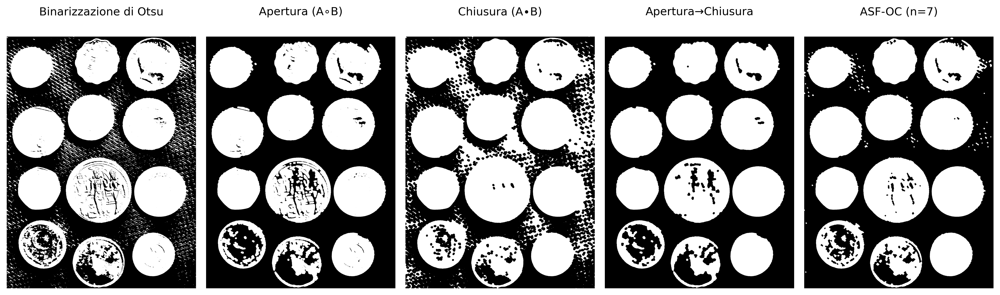
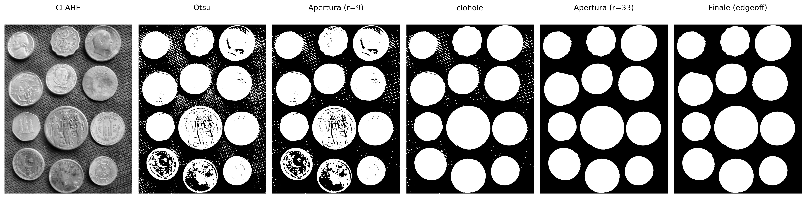
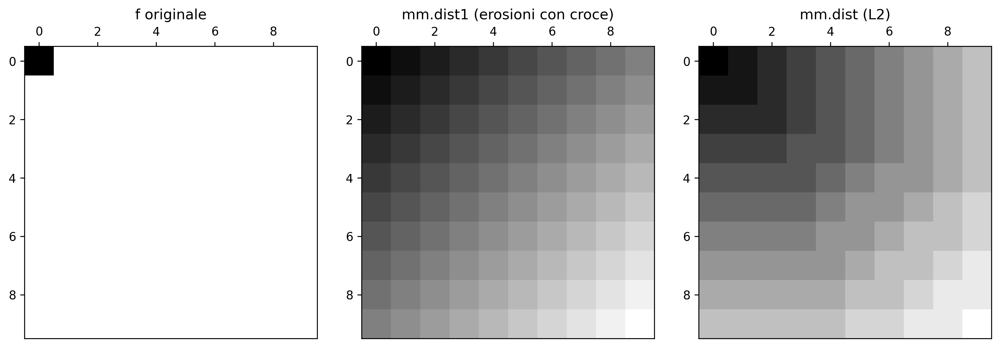
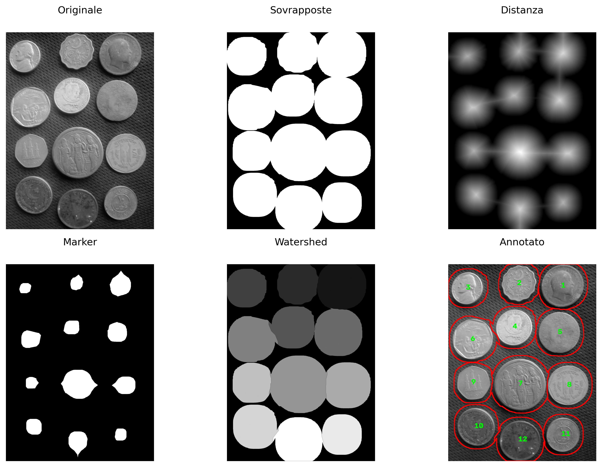

4Morfologia Matematica e Segmentazione delle Immagini
Questo capitolo presenta due temi fondamentali dell’Elaborazione Digitale delle Immagini (PDI): la morfologia matematica e la segmentazione delle immagini. La morfologia matematica fornisce un quadro teorico basato sulla teoria degli insiemi per analizzare, affinare e quantificare la forma degli oggetti in immagini binarie e in scala di grigi, mediante operatori fondamentali come erosione e dilatazione. La segmentazione, a sua volta, ha l’obiettivo di suddividere l’immagine in regioni di interesse, separando gli oggetti dallo sfondo e producendo rappresentazioni adeguate per l’analisi e l’interpretazione.
Il capitolo inizia con la sogliatura, una delle tecniche più importanti di segmentazione, introducendo il metodo automatico di Otsu e riprendendo l’analisi degli istogrammi tramite la varianza tra classi, presentata nel Capitolo 1. Successivamente, vengono studiati i principali operatori della morfologia matematica, inclusi erosione, dilatazione, apertura, chiusura e ricostruzione morfologica, che consentono di affinare maschere binarie e preservare strutture rilevanti degli oggetti. Infine, vengono presentate tecniche di segmentazione basata su regioni, come l’etichettatura delle componenti connesse, la trasformata della distanza e l’algoritmo watershed basato su marcatori, culminando nell’estrazione di descrittori geometrici e nella generazione di bounding box compatibili con i moderni sistemi di rilevamento degli oggetti.
4.1 Obiettivi
Al termine di questo capitolo sarai in grado di:
Applicare la sogliatura: Comprendere il criterio automatico di Otsu basato sulla massimizzazione della varianza tra le classi (\(\sigma_B^2\)) e selezionare strategie adeguate di pre-elaborazione per facilitare la segmentazione;
Padroneggiare la morfologia binaria: Comprendere e applicare erosione (\(A\ominus B\)) e dilatazione (\(A\oplus B\)) come operatori fondamentali, derivando apertura (\(A\circ B\)), chiusura (\(A\bullet B\)) e operazioni basate sulla ricostruzione morfologica, come mm.clohole e mm.edgeoff;
Applicare la morfologia in toni di grigio: Utilizzare il gradiente morfologico e filtri top-hat per l’enhancement e l’analisi di strutture locali;
Etichettare componenti connesse: Identificare e separare regioni connesse in immagini binarie mediante algoritmi di etichettatura;
Applicare la trasformata della distanza: Interpretare e calcolare le distanze dallo sfondo utilizzando approcci morfologici e metriche geometriche;
Segmentare per regioni: Costruire pipeline di segmentazione basate su marcatori utilizzando la Trasformata della Distanza e l’algoritmo watershed;
Estrarre descrittori geometrici: Calcolare proprietà come area, perimetro, centroide, circolarità e bounding boxes tramite mm.label0 ed estrazione dei contorni;
Relazionare PDI e visione artificiale: Comprendere come i descrittori estratti tramite segmentazione possano essere convertiti in formati utilizzati da rilevatori moderni, come YOLO.
La sogliazione (thresholding) è una delle forme più semplici ed efficaci di segmentazione delle immagini. Il suo obiettivo è classificare ogni pixel in due classi di intensità, solitamente associate a oggetto e sfondo:
dove \(f(x,y)\) rappresenta l’intensità del pixel nell’immagine originale e \(g(x,y)\) l’immagine binaria risultante.
La scelta della soglia \(T\) è importante per la qualità della segmentazione. Il metodo di Otsu determina automaticamente la soglia ottimale massimizzando la varianza tra le classi\(\sigma_B^2\), definita come:
\(w_0(T)\) e \(w_1(T)\) sono le probabilità cumulate delle classi sfondo e oggetto;
\(\mu_0(T)\) e \(\mu_1(T)\) sono le medie di intensità di queste classi;
\(\sigma_B^2(T)\) rappresenta la varianza tra le classi per una data soglia \(T\).
Il metodo funziona meglio quando l’istogramma presenta due gruppi di intensità relativamente separati. A tal fine, l’algoritmo valuta tutte le soglie possibili dell’immagine — tipicamente nell’intervallo \([0,255]\) per immagini a 8 bit — e seleziona il valore che massimizza la varianza tra le classi, denotata da \(\sigma_B^2\):
Il metodo di Otsu produce risultati migliori quando l’istogramma presenta due picchi ben definiti (bimodalità), corrispondenti allo sfondo e all’oggetto. Maggiore è la separazione tra questi picchi e più pronunciato è il massimo di \(\sigma_B^2\), più affidabile tende a essere la soglia ottenuta.
In immagini con illuminazione non uniforme o multiple regioni di intensità, tecniche di sogliazione adattativa — in cui la soglia viene calcolata localmente — tendono a produrre segmentazioni più robuste.
L’indice \(B\) in \(\sigma_B^2\) significa between classes (tra le classi). Pertanto, \(\sigma_B^2\) rappresenta la varianza tra le classi (between-class variance).
4.2.1 Immagine di Monete
L’immagine utilizzata per praticare la segmentazione è una fotografia di una collezione di monete di diversi paesi ed epoche (Figura 4.1). Crediti: GAZI.MD.AHAD (CC BY-SA 4.0). Essa presenta oggetti circolari con bordi ben definiti, risultando ideale per dimostrare la sogliatura, gli operatori morfologici, la trasformata della distanza, il watershed e i descrittori di forma.
Figura 4.1: Immagine con monete di vari tipi. Crediti: GAZI.MD.AHAD (CC BY-SA 4.0).
4.2.2 Pre-processing per Otsu
La qualità del metodo di Otsu dipende direttamente da quanto bimodale è l’istogramma dell’immagine in ingresso. L’immagine originale delle monete presenta illuminazione non uniforme e monete scure (rame ossidato) con intensità vicine a quelle dello sfondo scuro, rendendo l’istogramma scarsamente bimodale.
Per minimizzare queste limitazioni, verranno valutate due tecniche classiche di pre-processing, presentate nel capitolo precedente, applicate prima della fase di sogliatura. La Tabella 4.1 riassume le caratteristiche di ciascun approccio. Queste tecniche mirano ad aumentare la separazione tra oggetto e sfondo, rendendo l’istogramma più vicino a una distribuzione bimodale.
Tabella 4.1: Tecniche di pre-processing valutate per migliorare la separazione tra monete e sfondo prima dell’applicazione del metodo di Otsu.
Tecnica
Cosa fa
Quando usarla
CLAHE
Equalizzazione dell’istogramma adattiva locale
Basso contrasto globale o regionale
Gaussiano
Smussamento tramite convoluzione con gaussiana
Rumore ad alta frequenza (texture dello sfondo)
La funzione cv2.createCLAHE(clipLimit, tileGridSize) divide l’immagine in blocchi e applica l’equalizzazione dell’istogramma a ciascuno di essi, limitando l’amplificazione del rumore tramite il parametro clipLimit. Il filtro gaussiano (cv2.GaussianBlur), invece, smussa texture sottili che potrebbero creare falsi picchi nell’istogramma.
Per confrontare oggettivamente quale pre-processing produca il miglior input per il metodo di Otsu, verranno presentati, per ciascuna versione dell’immagine, l’immagine stessa, l’istogramma con la soglia ottimale \(T^*\) evidenziata, la curva \(\sigma_B^2(T)\) e il risultato della binarizzazione.
NotaCriterio di confronto
La versione che presenta il valore maggiore di \(\sigma_B^2\) al suo picco fornisce la migliore separazione tra le classi di sfondo e oggetto e, di conseguenza, il miglior input per il metodo di Otsu (Figura 4.2).
import cv2, ioimport matplotlib.pyplot as pltdef otsu_criterio(img): h=mm.hist(img); p=h/h.sum();# histograma e probabilità sigma2=np.zeros(len(p)) for T inrange(1,len(p)): # percorre soglie w0,w1=p[:T].sum(),p[T:].sum() # probabilità delle classiif w0*w1==0: continue# evita divisione per zero mu0=(np.arange(T)*p[:T]).sum()/w0 # media sfondo mu1=(np.arange(T,len(p))*p[T:]).sum()/w1 # media oggetto sigma2[T]=w0*w1*(mu0-mu1)**2# σ²B(T)return sigma2,np.argmax(sigma2) # curva e T ottimaledef fig2img(fig): b=io.BytesIO(); fig.savefig(b,format='png',dpi=100) # figura → buffer plt.close(fig); b.seek(0)return np.array(plt.imread(b)) # buffer → arraydef plot_curve(y,T,title,ylabel,color): fig,ax=plt.subplots(figsize=(4,3)) ax.plot(y,color=color) if ylabel=="σ²B"else ax.bar(range(len(y)),y,color=color,width=1) ax.axvline(T,color='red',lw=2,label=f"T*={T}") # soglia ottimale ax.set(xlabel="T"if ylabel=="σ²B"else"Intensidade",ylabel=ylabel) ax.legend(fontsize=8); plt.tight_layout()return fig2img(fig)# ── Pre-processamenti ───────────────────────────────────────────────────────img_clahe = mm.clahe(img_coins_gray, clipLimit=2.0, tiles=8)img_gauss = cv2.GaussianBlur(img_clahe,(5,5),0)imgs0=[("Original",img_coins_gray), ("CLAHE",img_clahe), ("CLAHE+Gauss",img_gauss)]# ── Tabella comparativa ───────────────────────────────────────────────────────print(f"{'Versão':<18}{'T*':>6}{'σ²B pico':>14}")print("-"*40)imgs,titles=[],[]for nome,img in imgs0: sigma2,T=otsu_criterio(img) # calcola σ²B(T)print(f"{nome:<18}{T:>6}{sigma2[T]:>14.4e}") imgs += [ img, # immagine plot_curve(mm.hist(img),T,f"Hist T*={T}","Freq.","steelblue"), plot_curve(sigma2,T,"σ²B(T)","σ²B","darkorange"), mm.threshold(img) # Otsu finale ] titles += [nome,f"Hist T*={T}","σ²B(T)",f"Otsu T*={T}"]# ── Visualizzazione finale ───────────────────────────────────────────────────────────mm.show(imgs,titles=titles,cols=4,figsize=(12,12),dpi=200)
Versão T* σ²B pico
----------------------------------------
Original 105 1.9437e+03
CLAHE 122 2.4695e+03
CLAHE+Gauss 123 2.4283e+03
Figura 4.2: Comparação dos pré-processamentos: imagem | histograma+T* | σ²B(T) | Otsu. A melhor separação bimodal indica o limiar mais confiável.
4.2.3 Risultato: CLAHE come Migliore Pre-Elaborazione
L’analisi della Figura 4.2 indica che il CLAHE ha ottenuto il valore più alto della varianza tra le classi (\(\sigma_B^2 \approx 2{,}47 \times 10^3\)), con soglia ottimale \(T^* = 122\). Sebbene la combinazione CLAHE+Gaussiano abbia prodotto un risultato molto simile (\(\sigma_B^2 \approx 2{,}43 \times 10^3\), \(T^* = 123\)), il criterio quantitativo del metodo di Otsu favorisce leggermente l’uso del solo CLAHE.
In termini visivi, le immagini binarizzate ottenute con CLAHE e CLAHE+Gaussiano sono praticamente equivalenti. La differenza tra i due approcci diventa più evidente nell’analisi degli istogrammi e dei valori di \(\sigma_B^2(T)\) piuttosto che nell’ispezione diretta delle segmentazioni risultanti. Pertanto, la scelta del CLAHE si basa principalmente sulla massimizzazione della separazione statistica tra le classi di sfondo e oggetto.
ConsiglioInterpretazione dei risultati
Si noti che le pre-elaborazioni con CLAHE e CLAHE+Gaussiano producono istogrammi e soglie ottimali molto vicini (\(T^*=122\) e \(T^*=123\)). Di conseguenza, le immagini binarizzate risultanti sono anch’esse piuttosto simili. In questo caso, la decisione non si basa su differenze visive marcate, ma sul criterio oggettivo del metodo di Otsu: il valore più alto di \(\sigma_B^2\) indica la migliore separazione tra le classi.
4.3 Morfologia Matematica
La morfologia matematica è una teoria basata su insiemi utilizzata per analizzare la forma e la struttura degli oggetti nelle immagini. Diversamente dai filtri lineari presentati nel Capitolo 3, gli operatori morfologici sono non lineari, poiché si basano su operazioni di minimo, massimo e inclusione spaziale, invece che su combinazioni lineari di intensità. Questi operatori agiscono sull’intorno di ciascun pixel mediante un elemento strutturante\(\mathbb{B}\), responsabile di definire la forma e la dimensione della regione analizzata.
Nelle immagini binarie e in toni di grigio con elementi piani, l’elemento strutturante traslato nella posizione \(x\) è definito spazialmente come:
\[
\mathbb{B}_x = \{ x + b \mid b \in \mathbb{B} \}
\]
Nelle regioni di bordo dell’immagine, parte dell’insieme \(\mathbb{B}_x\) può estendersi oltre il dominio fisico della scena (\(\mathbb{E}\)). Per garantire la coerenza matematica degli operatori primitivi in tali frontiere, si assume teoricamente che lo spazio esterno al dominio dell’immagine sia riempito con l’elemento neutro dell’operazione corrispondente (infinito positivo per l’erosione e infinito negativo per la dilatazione), impedendo che l’ambiente esterno corrompa le strutture interne dell’oggetto.
Quando l’elemento strutturante associa pesi ai propri elementi — cioè \(b: \mathbb{B} \to \mathbb{Z}\) — esso viene denominato funzione strutturante o elemento strutturante non piano.
Sviluppata da Matheron e Serra negli anni Sessanta per immagini binarie e successivamente estesa ai toni di grigio, la morfologia matematica fonda operatori come il gradiente morfologico, il top-hat, il watershed e la trasformata della distanza, tutti derivati da due primitivi: erosione e dilatazione [Matheron (1975); Serra (1982)].
4.3.1 Erosione e Dilatazione
I due operatori primitivi sono definiti in modo unificato per immagini in toni di grigio (\(f: \mathbb{E} \to \mathbb{Z}\)) e, per restrizione al dominio \(\{0,1\}\), anche per immagini binarie.
4.3.1.1 Erosione
La Erosione di un’immagine \(f\) mediante un elemento strutturante \(b: \mathbb{B} \to \mathbb{Z}\) è definita formalmente da:
In pratica, la erosione sostituisce l’intensità del pixel \(x\) con il valore minimo risultante dalla differenza tra l’immagine e l’elemento strutturante nell’intorno definito dal dominio \(\mathbb{B}\). Valori positivi nei pesi di \(b(z)\) spingono il risultato locale verso il basso, “scavando” più profondamente il rilievo dell’immagine e intensificando l’erosione.
Nel caso piatto (dove i pesi sono nulli all’interno del dominio, cioè \(b \equiv 0\)), l’espressione si semplifica al minimo locale puro:
Nelle immagini binarie, questa operazione equivale a richiedere che l’insieme \(\mathbb{B}\), traslato alla coordinata \(x\), sia completamente contenuto nell’oggetto \(A\):
\[
A \ominus \mathbb{B} = \{\, z \in \mathbb{E} \mid \mathbb{B}_z \subseteq A \,\}
\]
Effetto Visivo:Rimpicciolisce oggetti e strutture chiare, eliminando protuberanze, picchi luminosi o rumori che siano geometricamente più piccoli del dominio \(\mathbb{B}\).
4.3.1.2 Implementazione dell’erosione
La versione didattica mm.ero0 implementa il caso particolare dell’erosione con elemento strutturante piatto. Per ogni pixel \((y,x)\), la funzione esamina i vicini spaziali consentiti da \(B\) e memorizza il valore minimo trovato nell’immagine di ingresso \(f\), riproducendo direttamente l’operazione di minimo locale descritta nella Equazione 4.3 per \(b \equiv 0\).
Si noti che i valori dei vicini vengono sempre letti in modo statico dall’immagine originale \(f\); la matrice di uscita \(g\) viene utilizzata esclusivamente per registrare il minimo accumulato del vicinato corrente. In questo modo, il risultato finale è invariante rispetto all’ordine di scansione dei pixel (sia per righe che per colonne).
La funzione ausiliaria _viz calcola le coordinate dei vicini validi entro i limiti fisici dell’immagine. Ai bordi, l’inizializzazione dell’accumulatore a 255 emula esattamente il riempimento con elemento neutro richiesto dalla teoria. La funzione di interfaccia mm.ero, invece, ricorre all’implementazione nativa e ottimizzata di OpenCV (mm.ero) quando l’elemento strutturante è piatto, passando alla routine generale mm.ero1 qualora l’elemento possieda pesi topografici.
L’esempio computazionale seguente illustra l’applicazione di un elemento strutturante a croce (mm.secross()) evidenziato nella Figura 4.3, confrontando l’esecuzione della variante didattica a ciclo (mm.ero0) con il motore computazionale di OpenCV (mm.ero).
La funzione _viz utilizza yield per generare ogni vicino su richiesta, senza memorizzare tutti i risultati in memoria in una lista. Nell’esperimento seguente, una finestra di 3000×3000 produce 9 milioni di vicini. L’implementazione basata su lista ha consumato oltre 1 GB di RAM e ha richiesto circa 46 s, mentre la versione con yield ha consumato memoria trascurabile e ha impiegato 38 s. Nell’elaborazione delle immagini, i generatori sono particolarmente utili per attraversare grandi vicinanze in modo efficiente.
import tracemallocdef lista(n): return [(i, i) for i inrange(n)]def gera(n):for i inrange(n): yield i, ifor nome, f in [("LISTA", lista), ("YIELD", gera)]: tracemalloc.start()sum(x+y for x,y in f(9_000_000)) _, pico = tracemalloc.get_traced_memory() tracemalloc.stop()print(f"{nome}: {pico/1024/1024:.1f} MB")
LISTA: 830.8 MB
YIELD: 0.0 MB
4.3.1.3 Dilatazione
La Dilatazione di un’immagine \(f\) tramite una funzione strutturante \(b: \mathbb{B} \to \mathbb{Z}\) è definita formalmente da:
In pratica, la dilatazione sostituisce l’intensità del pixel \(x\) con il valore massimo risultante dalla somma tra l’immagine e l’elemento strutturante nell’intorno definito. L’argomento di inversione spaziale (\(x - z\)) indica che la dilatazione valuta implicitamente l’elemento trasposto (riflesso) \(\hat{b}\), proprietà fondamentale per garantire la dualità matematica rispetto all’erosione.
Nel caso piano (dove i pesi sono nulli all’interno del dominio, cioè \(b \equiv 0\)), l’espressione si riduce al massimo locale puro:
Nelle immagini binarie, questa operazione equivale a richiedere che l’insieme riflesso \(\hat{\mathbb{B}}\), traslato alla coordinata \(x\), abbia intersezione non vuota con l’oggetto \(A\):
\[
A \oplus \mathbb{B} = \{\, z \in \mathbb{E} \mid \hat{\mathbb{B}}_z \cap A \neq \varnothing \,\}
\]
Effetto Visivo:Espande le strutture chiare dell’immagine, aumentando il riempimento degli oggetti, connettendo componenti vicine ed eliminando canali, cavità scure o valli geometricamente più piccole del dominio \(\mathbb{B}\).
4.3.1.4 Implementazione della dilatazione
La versione didattica mm.dil0 implementa il caso particolare di dilatazione con elemento strutturante piano. Per ogni pixel \((y,x)\), la funzione esamina i vicini spaziali consentiti da \(B\) e memorizza il valore più alto trovato nell’immagine di ingresso \(f\), riproducendo direttamente l’operazione di massimo locale per \(b \equiv 0\).
Prima di iniziare la scansione spaziale, l’elemento strutturante subisce una riflessione geometrica tramite l’istruzione np.flip(Bc) per costruire esplicitamente la matrice trasposta \(\hat{B}\) richiesta dalla teoria. In maschere perfettamente simmetriche (come croci, quadrati e dischi centrati sull’origine), questa riflessione non altera la disposizione dei pixel; tuttavia, per elementi asimmetrici, tale fase è strettamente necessaria per garantire l’equivalenza con le definizioni formali e salvaguardare le leggi di dualità.
Come verificato nell’operatore di erosione, i valori dei vicini vengono sempre letti in modo statico dalla matrice originale \(f\), mentre la matrice di uscita \(g\) agisce puramente come registratore del massimo accumulato del vicinato. Ai bordi dell’immagine, l’inizializzazione dell’accumulatore a 0 emula con precisione il riempimento esterno con elemento neutro (\(-\infty\), o zero nelle rappresentazioni a 8 bit), garantendo che i bordi fisici della scena vengano dilatati in perfetta conformità con lo standard adottato da OpenCV.
L’esempio computazionale seguente illustra l’applicazione pratica di un elemento a croce (mm.secross()), validando la coerenza tra la logica basata su cicli (mm.dil0) e il metodo nativo industriale (mm.dil).
def dil(f, Bc=np.zeros((3,3),dtype='uint8')):"""Dilatazione (OpenCV o con pesi)."""try: return cv2.dilate(f, Bc)except: return mm.dil1(f, Bc)def dil0(f, Bc=np.zeros((3,3),dtype='uint8')):"""Dilatazione piatta seguendo rigorosamente la teoria.""" g = np.empty_like(f) Bc = np.flip(Bc) # riflessione esplicita: B̂for y inrange(f.shape[0]):for x inrange(f.shape[1]): g[y,x] =0# Inizializza con il valore minimo per cercare il massimofor vy,vx,bv in mm._viz(f,Bc,y,x):if bv and g[y,x] < f[vy,vx]: g[y,x] = f[vy,vx]return g# Script di Test e ValidazioneB = mm.secross()print("Elemento strutturante B:")print(mm.drawImage(B))f = mm.randomImage(5,5)print("Immagine originale f:")print(mm.drawImage(f))print("Dilatazione piatta didattica (dil0):")print(mm.drawImage(dil0(f, B)))print("Dilatazione ottimizzata OpenCV (dil):")print(mm.drawImage(dil(f, B)))
NotaNota: Il confronto dei segni (\(f(x+z)\) vs \(f(x-z)\))
Confronta le definizioni formali dell’erosione (Equazione 4.3) e della dilatazione (Equazione 4.4). Considera un elemento strutturante asimmetrico a destra \(\mathbb{B}=\{0,1\}\) (origine e un pixel a destra) applicato nella posizione \(x=10\).
A causa del segno negativo (\(-z\)), avanzare nell’elemento strutturante corrisponde a retrocedere nell’immagine, facendo sì che la dilatazione consulti il pixel a sinistra (\(9\)).
La funzione _viz, utilizzata in morph.py, genera vicini tramite spostamenti additivi della forma \(x+z\). Per questo motivo, l’implementazione di mm.dil0 riflette preventivamente l’elemento strutturante mediante np.flip(B). Dopo la riflessione, la scansione basata su \(x+z\) accede esattamente agli stessi punti definiti dall’espressione teorica \(f(x-z)\) della dilatazione in Equazione 4.4..
Per elementi strutturanti simmetrici (come dischi, quadrati e croci centrate), la riflessione non modifica la maschera. Per elementi asimmetrici, invece, questo passaggio è indispensabile affinché l’implementazione riproduca correttamente la definizione matematica della dilatazione e preservi la dualità erosione–dilatazione.
NotaDualità erosione–dilatazione
Erosione e dilatazione sono duali rispetto al complemento. Ciò significa che un operatore può essere completamente ottenuto a partire dall’altro, a condizione di operare sul complemento dell’immagine utilizzando l’elemento strutturante riflesso \(\hat{B}\):
\[
(A \ominus B)^c = A^c \oplus \hat{B} \quad \Longleftrightarrow \quad A \ominus B = (A^c \oplus \hat{B})^c
\]
Analogamente, anche la dilatazione può essere ottenuta a partire dall’erosione:
\[
(A \oplus B)^c = A^c \ominus \hat{B} \quad \Longleftrightarrow \quad A \oplus B = (A^c \ominus \hat{B})^c
\]
In termini pratici, l’erosione di un oggetto può essere ottenuta mediante la dilatazione del suo complemento, seguita dalla complementazione del risultato (e viceversa). Nell’implementazione del pacchetto morph.py, le versioni didattiche mm.ero0 e mm.dil0 rendono esplicita tale struttura attraverso cicli (loop), mentre mm.ero e mm.dil delegano le operazioni a OpenCV per una maggiore efficienza computazionale.
NotaCondizioni al contorno e immagini finite
Nella morfologia matematica classica, definita su un dominio infinito (tipicamente \(\mathbb{Z}^2\)), tale dualità è esatta. Nelle immagini digitali, tuttavia, si lavora con matrici finite, e il risultato dipende dal modo in cui vengono trattati i pixel situati al di fuori dell’immagine.
Affinché le identità di dualità rimangano valide, il complemento deve essere definito rispetto allo stesso universo e le condizioni al contorno adottate per l’erosione e per la dilatazione devono essere complementari tra loro. Ad esempio, se l’erosione assume che i pixel esterni appartengano all’oggetto (\(255\)), allora la dilatazione applicata al complemento deve assumere che questi stessi pixel esterni appartengano allo sfondo (\(0\)).
Quando vengono utilizzate diverse strategie di riempimento (replicazione, riflessione, valore costante, ecc.), la dualità teorica può cessare di essere soddisfatta esattamente nelle regioni prossime ai bordi dell’immagine.
Per illustrare numericamente gli operatori morfologici e la dualità erosione–dilatazione, la Figura 4.4 presenta un’immagine binaria 10×10 elaborata con un elemento strutturante a forma di “L”. Nell’implementazione di morph.py, l’origine di \(B\) è fissata nel centro geometrico della maschera — posizione \((1,1)\) per un kernel 3×3 — e deve corrispondere a un elemento attivo affinché l’erosione si comporti correttamente (come discusso in precedenza). L’elemento strutturante \(B_L\) definito di seguito soddisfa questa condizione. La Figura 4.5 completa l’analisi con un simulatore interattivo dell’erosione, consentendo di visualizzare lo spostamento dell’elemento strutturante sull’immagine e di identificare le posizioni in cui esso rimane completamente contenuto nell’oggetto.
Figura 4.4: Erosione e dilatazione su immagine binaria 10×10 con elemento strutturante ‘L’ asimmetrico 3×3. Validazione della dualità erosione–dilatazione.
🪨 Simulatore: Erosione MorfologicaA ⊖ B_L · offsets via _viz
Clicca su una cella del canvas per spostare il kernel B_L oppure usa i cursori per testare l'inclusione dei contenuti.
Posizione X (col)
4
Posizione Y (riga)
4
Pixel Erosione
255
🖱️ Clicca su una cella per spostare il kernel B_L
🟢
Successo: contenuto!
Il pixel riceve 1 (255) nell'immagine erosa.
Controlli delle Coordinate
4
4
Kernel B_L (3×3)
1
0
0
1
★
0
1
1
0
Figura 4.5: Simulatore: Erosione Morfologica (A ⊖ B_L)
4.3.2 Apertura e Chiusura
Combinando erosione e dilatazione si ottengono due operatori di grande utilità pratica: l’apertura e la chiusura, definiti dalle Equazioni Equazione 4.5 e Equazione 4.6. I loro principali effetti sono riassunti nella Tabella 4.2.
Apertura (opening) — erosione seguita da dilatazione con lo stesso \(B\):
\[
A \circ B = (A \ominus B) \oplus B
\tag{4.5}\]
Chiusura (closing) — dilatazione seguita da erosione con lo stesso \(B\):
\[
A \bullet B = (A \oplus B) \ominus B
\tag{4.6}\]
In pratica, mm.open e mm.close applicano lo stesso elemento strutturante nelle due fasi. Per elementi strutturanti simmetrici (i più comuni), questa implementazione coincide con la definizione matematica presentata sopra.
Tabella 4.2: Proprietà di apertura e chiusura.
Operatore
Sequenza
Effetto principale
Apertura \(A \circ B\)
erosione → dilatazione
Rimuove strutture incapaci di contenere l’elemento strutturante; leviga i contorni esterni
Chiusura \(A \bullet B\)
dilatazione → erosione
Riempie buchi più piccoli di \(B\); leviga i contorni interni
Proprietà importante: entrambi sono idempotenti. Per esempio,
\[
(A \circ B) \circ B = A \circ B,
\]
ovvero, dopo la prima applicazione, nuove applicazioni dello stesso operatore non alterano più il risultato.
4.3.2.1 Implementazione dell’apertura e della chiusura
A differenza dell’erosione e della dilatazione, l’apertura e la chiusura non introducono nuovi meccanismi computazionali. Entrambe si ottengono mediante la composizione sequenziale degli operatori primitivi già presentati:
La funzione mm.open delega l’operazione a mm.open(f, B), mentre mm.close utilizza mm.close(f, B), producendo lo stesso risultato in modo più efficiente.
L’apertura eredita dall’erosione la capacità di rimuovere strutture più piccole dell’ elemento strutturante e dalla dilatazione il ripristino parziale delle regioni conservate. La chiusura esegue il processo inverso: prima espande gli oggetti e poi ripristina le loro dimensioni originali, riempiendo lacune e fori più piccoli dell’elemento strutturante.
4.3.2.2 Filtro Sequenziale Alternato
Nella pratica, apertura e chiusura vengono spesso applicate in sequenza per rimuovere simultaneamente rumore esterno e riempire buchi interni. La funzione mm.asf (Alternating Sequential Filter) generalizza questa strategia applicando aperture e chiusure alternativamente con elementi strutturanti progressivamente più grandi. Le sequenze disponibili sono presentate nella Tabella 4.3.
Tabella 4.3: Sequenze del filtro sequenziale alternato mm.asf.
Sequenza
Ordine
Uso tipico
'OC'
apertura → chiusura
rimuove rumore esterno prima di riempire piccoli buchi
'CO'
chiusura → apertura
riempie piccoli buchi prima di rimuovere rumore esterno
'OCO'
apertura → chiusura → apertura
enfatizza la rimozione di rumore esterno
'COC'
chiusura → apertura → chiusura
enfatizza il riempimento di buchi e lacune
Il parametro n controlla il numero di scale utilizzate dal filtro. In ogni iterazione \(i\), l’elemento strutturante viene ampliato mediante somma di Minkowski (mm.sesum(b, i)), producendo una sequenza di filtri morfologici sempre più estesi. A differenza di una singola apertura o chiusura con un elemento strutturante grande, l’ASF esegue una progressiva levigatura su più scale, preservando meglio la geometria degli oggetti rilevanti mentre elimina strutture più piccole. La Figura 4.6 presenta un esempio di applicazione dell’apertura, della chiusura e dell’ASF sull’immagine delle monete.
img_bin = mm.threshold(img_clahe)B_disk = mm.sedisk(19)img_open = mm.open(img_bin, B_disk) # erosione → dilatazioneimg_close = mm.close(img_bin, B_disk) # dilatazione → erosioneimg_oc = mm.close(img_open, B_disk) # apertura seguita da chiusuraimg_asf = mm.asf(img_bin, 'OC', mm.sedisk(3), n=7) # ASF: disco base 3×3, cresce a ogni iterazionemm.show( [img_bin, img_open, img_close, img_oc, img_asf], titles=["Binarizzazione di Otsu", "Apertura (A∘B)", "Chiusura (A∙B)","Apertura→Chiusura", "ASF-OC (n=7)"], cols=5, figsize=(15, 12))

Figura 4.6: Apertura, chiusura, composizione e filtro sequenziale alternato applicati alla binarizzazione di Otsu delle monete (pre-processate con miglioramento del contrasto). Elemento strutturante: disco 13×13.
4.3.3 Operatori Geodetici
Gli operatori geodetici introducono una restrizione aggiuntiva agli operatori morfologici classici tramite un’immagine di controllo denominata maschera\(g\). Invece di consentire che l’erosione o la dilatazione si propaghino liberamente attraverso l’immagine, il risultato di ogni iterazione è limitato punto per punto dai valori della maschera, vincolando l’evoluzione dell’operazione alle regioni consentite.
4.3.3.1 Dilatazione Geodetica
La dilatazione geodetica di un’immagine marcatore \(f\) sotto un’immagine maschera \(g\), utilizzando un elemento strutturante piano \(b\), è definita da:
\[
f \oplus_g b = (f \oplus b) \wedge g,
\tag{4.7}\]
dove \(\wedge\) rappresenta il minimo punto per punto.
In altre parole, si esegue inizialmente una dilatazione convenzionale sul marcatore e, successivamente, il risultato viene limitato dalla maschera \(g\). In questo modo, la propagazione non può mai superare le regioni consentite dalla maschera.
La formulazione classica della dilatazione geodetica presuppone che il marcatore sia contenuto nella maschera, cioè \(f \le g\), garantendo che l’evoluzione dell’operazione rimanga sempre limitata dalla maschera.
4.3.3.2 Implementazione della dilatazione geodetica
La funzione mm.cdil implementa direttamente questo operatore e consente di eseguire multiple iterazioni consecutive:
def cdil(f, g, b=np.zeros((3,3),dtype='uint8'), n=1):"""Dilatação geodésica do marcador f sob a máscara g.""" y = f.copy()for _ inrange(n): y = np.minimum(mm.dil(y, b), g)return y
L’istruzione np.minimum(mm.dil(y, b), g) implementa esattamente la definizione matematica della dilatazione geodetica, cioè \((y \oplus b)\wedge g\).
Quando \(n=1\), la funzione esegue una singola dilatazione geodetica. Per \(n>1\), il risultato di ogni fase diventa il marcatore della fase successiva, producendo una propagazione progressiva controllata dalla maschera.
Il simulatore interattivo Figura 4.7 consente di seguire, passo dopo passo, la propagazione del marcatore \(f\) lungo i corridoi del labirinto. A ogni iterazione di mm.cdil, il fronte di dilatazione avanza verso le celle vicine libere — quelle in cui \(g = 1\) —, mentre le pareti (\(g = 0\)) rimangono invalicabili. Il numero di passi necessari affinché il marcatore raggiunga l’uscita corrisponde esattamente alla lunghezza geodetica del percorso più breve all’interno della maschera, evidenziando la connessione diretta tra la dilatazione geodetica iterata e la nozione di distanza nei grafi.
🗺️ Simulatore: Dilatazione Geodetica nel Labirintoδ_g^(n)(f)
Parete
Percorso libero (g)
Marcatore f
Propagazione
Uscita
Passo 0 — marcatore iniziale f (ingresso)
Figura 4.7: Simulatore interattivo di dilatazione geodetica: il marker f (verde) si propaga passo dopo passo attraverso i percorsi liberi della maschera g, senza attraversare pareti.
4.3.3.3 Erosione Geodetica
In modo duale, l’erosione geodetica di un’immagine marcatore \(f\) sotto un’immagine maschera \(g\) è definita da:
\[
f \ominus_g b = (f \ominus b) \vee g,
\tag{4.8}\]
dove \(\vee\) rappresenta l’operatore di massimo punto per punto.
In questo caso, l’erosione convenzionale del marcatore è seguita da una restrizione inferiore imposta dalla maschera. Pertanto, nessun pixel del risultato può assumere un valore inferiore al corrispondente pixel della maschera.
La formulazione classica dell’erosione geodetica presuppone la condizione duale
\[
f \ge g,
\]
cosicché la maschera agisca come limite inferiore durante l’intero processo.
4.3.3.4 Implementazione dell’erosione geodetica
La funzione statica mm.cero materializza questo operatore:
staticmethoddef cero(f, g, b=np.zeros((3,3),dtype='uint8'), n=1):"""Erosione geodetica del marcatore f sotto la maschera g.""" y = f.copy()for _ inrange(n): y = np.maximum(mm.ero(y, b), g)return y
Così come per la dilatazione geodetica, il parametro \(n\) definisce quante erosioni geodetiche successive verranno calcolate prima di restituire l’immagine finale.
NotaRelazione con la ricostruzione morfologica
La ricostruzione morfologica presentata nella prossima sezione è ottenuta mediante l’applicazione iterativa della dilatazione geodetica (mm.cdil) fino al raggiungimento di un punto fisso, cioè fino a quando nessuna cellula cambia valore tra due iterazioni consecutive. In altre parole, la ricostruzione consiste in una sequenza di dilatazioni geodetiche successive che si propagano all’interno della maschera fino a quando non si verificano ulteriori modifiche.
In modo duale, è possibile definire anche ricostruzioni basate sull’erosione geodetica tramite applicazioni successive di mm.cero.
4.3.3.5 Esempio: propagazione in un labirinto tramite dualità
La Figura 4.8 illustra la risoluzione del problema di connettività di un labirinto utilizzando la dualità morfologica attraverso le funzioni mm.cero e mm.suprec.
Invece di propagare un marcatore attraverso i corridoi liberi mediante dilatazioni geodetiche, il problema viene formulato nel dominio complementare. Inizialmente, la maschera originale viene invertita,
\[
g = 1 - g_{orig},
\]
così che le pareti assumano valore 1 e i corridoi valore 0. In modo analogo, il marcatore viene costruito nello stesso dominio complementare, contenente un unico valore 0 nella posizione di ingresso del labirinto e valore 1 in tutti gli altri pixel.
Utilizzando l’elemento strutturante a croce (mm.secross()), l’erosione geodetica agisce sul marcatore complementato. A ogni iterazione di mm.cero, la regione connessa al marcatore iniziale subisce erosioni successive, mentre la maschera impone un limite inferiore che impedisce la propagazione attraverso le pareti del labirinto.
Le immagini intermedie mostrano gli stati dell’evoluzione dopo diversi numeri di iterazioni (n=5, n=12 e n=22). Il risultato finale si ottiene mediante la ricostruzione geodetica per erosione (mm.suprec), che applica erosioni geodetiche successive fino a raggiungere un punto fisso, cioè una situazione in cui non si verifica alcuna ulteriore modifica tra due iterazioni consecutive.
Nel dominio complementare, la regione ricostruita corrisponde esattamente all’insieme dei corridoi connessi all’ingresso del labirinto. Pertanto, la connettività tra ingresso e uscita può essere determinata direttamente dall’immagine ricostruita.
Figura 4.8: Risoluzione del labirinto tramite Operazioni Complementari: invertendo la maschera e il marker all’inizio del pipeline, il flusso viene risolto direttamente nel dominio complementare tramite mm.cero e mm.suprec, eliminando inversioni ridondanti.
4.3.4 Ricostruzione Morfologica
La ricostruzione morfologica propaga un’immagine marker\(f\) all’interno di un’immagine maschera\(g\), garantendo che il risultato non superi mai i valori di intensità imposti dalla maschera. L’operatore fondamentale che rende possibile questa propagazione contenuta è la dilatazione geodesica, definita dalla Equazione 4.7.
La ricostruzione si ottiene applicando iterativamente questa dilatazione condizionata. Inizialmente, il marker è limitato dalla maschera per stabilire lo stato iniziale:
\[
X^{(0)} = f \wedge g,
\]
e le iterazioni successive sono definite in modo ricorsivo da:
\[
X^{(k)} = (X^{(k-1)} \oplus b) \wedge g.
\]
La sequenza cresce monotonicamente fino a raggiungere un punto fisso, producendo la ricostruzione morfologica per dilatazione (nota anche in letteratura come inf-ricostruzione):
La salita iterativa viene interrotta non appena viene raggiunta la stabilità, cioè quando due iterazioni consecutive producono matrici con valori assolutamente identici.
4.3.4.1 Implementazione della ricostruzione morfologica
La routine didattica mm.infrec implementa direttamente l’algoritmo iterativo a punto fisso. Inizialmente, il marcatore effettivo iniziale \(X^{(0)}\) è determinato tramite l’operazione np.minimum(f, g). Per garantire che il ciclo di verifica esegua il primo passaggio senza innescare false convergenze premature, la variabile di controllo dell’iterazione precedente (y1) è inizializzata con un valore sentinella al di fuori del dominio dei dati (o semplicemente con una matrice che forza la prima esecuzione).
def infrec(f, g, b=np.zeros((3,3), dtype='uint8')):"""Inf-ricostruzione: dilata il marcatore (f ∧ g) fino a convergenza sotto la maschera g.""" y = np.minimum(f, g)# Inizializza y1 con valori impossibili per forzare l'ingresso nel ciclo y1 = np.full_like(f, 256, dtype=np.int16) whilenot np.array_equal(y, y1): y1 = y.copy()# Applica la dilatazione geodetica: (y ⊕ b) ∧ g y = np.minimum(mm.dil(y, b), g)return y.astype('uint8')
All’interno del ciclo while, la variabile y memorizza la stima corrente della ricostruzione \(X^{(k)}\), mentre y1 conserva l’immagine dello stadio immediatamente precedente \(X^{(k-1)}\). L’istruzione di controllo condizionale np.minimum(mm.dil(y, b), g) traduce fedelmente la dilatazione geodetica teorica, dove l’espansione morfologica convenzionale gestita da OpenCV viene immediatamente “potata” e limitata dalle barriere di intensità della maschera \(g\). Il ciclo termina quando nessuna modifica dei pixel viene registrata tra i passaggi.
4.3.4.2 Vantaggi della ricostruzione morfologica
La ricostruzione morfologica è significativamente più robusta dell’apertura convenzionale perché è in grado di rimuovere strutture indesiderate senza distorcere o alterare la morfologia degli oggetti che devono essere preservati.
Mentre l’apertura classica smussa gli angoli, elimina le punte e deforma i contorni a causa dell’imposizione geometrica rigida dell’elemento strutturante, la ricostruzione geodetica utilizza la maschera per recuperare con precisione i limiti e le forme originali degli oggetti che presentano connettività con il marcatore originale.
In termini intuitivi, il marcatore agisce come un seme di contagio che si espande progressivamente, ma solo attraversando le regioni consentite dalla maschera. I componenti che non presentano alcuna intersezione con il marcatore non verranno mai ricostruiti (venendo eliminati), mentre i componenti toccati dal seme si espandono fino a ripristinare integralmente la loro geometria originale.
Questo comportamento discriminatorio e conservativo è illustrato nella Figura 4.9, utilizzando l’elemento strutturante a croce presentato nella Figura 4.3..
Figura 4.9: Pipeline di Ricostruzione Morfologica per Dilatazione Condizionata: la maschera contiene due oggetti, il marcatore isola solo il nucleo dell’oggetto principale, e le iterazioni ricostruiscono la sua forma esatta fino alla convergenza.
4.3.5 Riempimento dei Buchi e Rimozione dei Bordi
Due operatori basati sulla ricostruzione morfologica completano il pipeline di pulizia binaria. Le loro caratteristiche principali sono riassunte nella Tabella 4.4.
Riempimento dei buchi (mm.clohole) rimuove le cavità completamente circondate dall’oggetto, indipendentemente dalla loro dimensione, senza alterare i contorni esterni. La procedura agisce sul complemento dell’immagine, utilizzando come marker una restrizione della cornice (frame) allo sfondo:
In termini operativi, si ricostruisce prima lo sfondo esterno e, successivamente, si applica la complementazione per recuperare gli oggetti con i buchi riempiti.
Rimozione degli oggetti di bordo (mm.edgeoff) elimina tutti gli oggetti che toccano il bordo dell’immagine, preservando solo i componenti interamente interni. Il marker è ottenuto dall’intersezione tra la cornice (frame) e gli oggetti dell’immagine:
\[
\text{edgeoff}(f) = f \setminus R_f^\delta(\text{frame}(f) \wedge f)
\tag{4.11}\]
Tabella 4.4: Confronto tra gli operatori clohole e edgeoff.
Operatore
Marker
Maschera
Effetto
mm.clohole
frame ristretto allo sfondo (\(f^c\))
\(f^c\)
Riempie i buchi interni
mm.edgeoff
frame ristretto all’oggetto (\(f\))
\(f\)
Rimuove gli oggetti connessi al bordo
L’evoluzione passo passo di queste trasformazioni geodetiche può essere seguita nelle figure seguenti. La Figura 4.10 illustra il meccanismo di inondazione controllata dell’operatore mm.clohole, in cui la ricostruzione avviene a partire dallo sfondo esterno e impedisce la propagazione verso regioni interne non connesse all’esterno, risultando in un riempimento consistente delle cavità interne. In contrapposizione, la Figura 4.11 dettaglia la dinamica dell’operatore mm.edgeoff, in cui solo i componenti connessi al bordo vengono ricostruiti e successivamente rimossi, preservando esclusivamente gli oggetti interamente contenuti all’interno dell’immagine.
La connettività della propagazione geodetica è controllata dall’elemento strutturante: mm.sebox() (vicinanza di 8) include le connessioni diagonali, mentre mm.secross() (vicinanza di 4) le esclude. Di conseguenza, la scelta dell’elemento strutturante influenza quali componenti vengono raggiunti dalla ricostruzione e, quindi, quali verranno preservati o rimossi.
4.3.5.1 Conformità con l’implementazione
Le definizioni sopra riportate sono direttamente allineate con l’implementazione in morph.py, riprodotta di seguito:
staticmethoddef clohole(f, b=np.ones((3,3),dtype='uint8')):# marcador restrito ao fundo da imagem marcador = mm.frame(f, border=1) & mm.neg(f)return mm.neg(mm.infrec(marcador, mm.neg(f), b))staticmethoddef edgeoff(f, b=np.ones((3,3),dtype='uint8')):# marcador restrito aos objetos da imagem marcador = mm.frame(f, border=1) & freturn mm.subm(f, mm.infrec(marcador, f, b))
Queste implementazioni rendono esplicito che entrambi gli operatori sono istanze dirette della ricostruzione morfologica per dilatazione geodetica con mm.infrec, differendo solo nella scelta del marcatore e della maschera: clohole opera sul complemento dell’immagine, mentre edgeoff opera direttamente sul dominio degli oggetti.
Figura 4.10: Pipeline di riempimento dei buchi (clohole): il marcatore proviene dal bordo dell’immagine, ristretto al complemento \(f^c\). La dilatazione geodetica ricostruisce lo sfondo esterno; dopo la complementazione, i buchi interni risultano riempiti.
Figura 4.11: Pipeline di eliminazione delle strutture di bordo (edgeoff): il marker cattura le radici connesse alle estremità, la ricostruzione delimita questi elementi e la sottrazione preserva solo gli oggetti totalmente interni.
4.3.6Pipeline di Pulizia Binaria con CLAHE
Sulla base dell’analisi precedente — in cui il CLAHE ha prodotto il maggiore valore della varianza tra classi (\(\sigma_B^2 \approx 2{,}47 \times 10^3\)), vedi Figura 4.2, e l’operatore mm.clohole si è dimostrato efficace nel riempimento delle cavità interne —, il pipeline finale di segmentazione, illustrato in Figura 4.12, è strutturato dal seguente flusso computazionale:
Dopo la fase di mm.clohole, si applica una seconda apertura morfologica con un elemento strutturante più grande (mm.sedisk(33), disco di diametro 33). Questa operazione rimuove piccole regioni residue e artefatti che potrebbero essere rimasti dopo la segmentazione. In particolare, il riempimento geodetico può trasformare piccole cavità isolate in componenti collegati all’oggetto, rendendo opportuna una fase aggiuntiva di filtraggio basata sulla dimensione. Il diametro è stato scelto in modo che le monete rimangano in grado di contenere l’elemento strutturante, mentre i componenti significativamente più piccoli vengano eliminati.
In questa immagine, nessuna moneta è collegata al bordo della matrice. Di conseguenza, l’applicazione di mm.edgeoff non altera il risultato ottenuto dopo la seconda apertura. Tuttavia, questa fase è mantenuta nel pipeline per robustezza, poiché in altre immagini potrebbero esistere oggetti parzialmente visibili o collegati ai bordi, che devono essere rimossi prima della fase di analisi.
ConsiglioPerché l’apertura dopo il clohole?
L’operatore mm.clohole riempie tutte le cavità chiuse presenti negli oggetti segmentati. In alcune situazioni, piccole regioni indesiderate possono rimanere dopo questa fase o diventare collegate agli oggetti principali. L’apertura morfologica successiva rimuove i componenti più piccoli dell’elemento strutturante, preservando le monete grazie alla loro dimensione significativamente maggiore.
# ── Pre-elaborazione: solo CLAHEimg_clahe0 = mm.clahe(img_coins_gray, 2.0, 8)# ── Fase 1: Binarizzazione Otsuimg_bin = mm.threshold(img_clahe0)# ── Fase 2: Apertura — rimuove i rumori bianchi di sfondoimg_open = mm.open(img_bin, mm.sedisk(9))# ── Fase 3: clohole — chiude tutti i buchi interniimg_hole = mm.clohole(img_open)# ── Fase 4: Apertura (kernel grande) — rimuove gli artefatti del cloholeimg_limpo = mm.open(img_hole, mm.sedisk(33))# ── Fase 5: edgeoff — rimuove gli oggetti che toccano il bordoimg_final = mm.edgeoff(img_limpo, border=1)mm.show( [img_clahe0, img_bin, img_open, img_hole, img_limpo, img_final], titles=["CLAHE", "Otsu", "Apertura (r=9)","clohole", "Apertura (r=33)", "Finale (edgeoff)"], cols=6, figsize=(18, 6))

Figura 4.12: Pipeline completo di segmentazione con CLAHE: Otsu → apertura (r=9) → clohole → apertura (r=33) → edgeoff.
4.3.7 Morfologia in Ton di Grigio
Gli operatori morfologici si estendono naturalmente alle immagini in toni di grigio. In questa formulazione, l’erosione e la dilatazione agiscono direttamente sui livelli di intensità dell’immagine. Per elementi strutturanti piatti (\(b \equiv 0\)), l’erosione corrisponde al minimo locale e la dilatazione al massimo locale all’interno del vicinato definito dall’elemento strutturante.
L’interpretazione intuitiva è semplice: l’erosione scurisce le regioni sostituendo ogni pixel con il valore minore presente nel suo vicinato, mentre la dilatazione schiarisce le regioni utilizzando il valore maggiore disponibile. La combinazione di questi operatori consente di costruire trasformazioni in grado di evidenziare i bordi, rimuovere le tendenze di illuminazione e mettere in risalto le strutture locali.
Tre operatori derivati sono particolarmente utili:
Gradiente morfologico — evidenzia i bordi come differenza tra dilatazione ed erosione:
\[
\text{grad}_B(f) = (f \oplus B) - (f \ominus B)
\tag{4.12}\]
Top-hat — evidenzia strutture brillanti più piccole dell’elemento strutturante (differenza tra l’immagine originale e la sua apertura):
\[
\text{top-hat}_B(f) = f - (f \circ B)
\tag{4.13}\]
Black-hat — evidenzia strutture scure più piccole dell’elemento strutturante (differenza tra la chiusura e l’immagine originale):
\[
\text{black-hat}_B(f) = (f \bullet B) - f
\tag{4.14}\]
Il Top-hat estrae dettagli brillanti che non sopravvivono all’apertura, mentre il Black-hat evidenzia dettagli scuri rimossi dalla chiusura. Il gradiente morfologico, invece, accentua le transizioni brusche di intensità, producendo una rappresentazione simile a quella di un rilevatore di bordi.
Per comprendere il meccanismo di questi operatori a livello locale, la Figura 4.13 presenta un simulatore interattivo di morfologia in toni di grigio. Il simulatore consente di modificare liberamente l’elemento strutturante, visualizzare il suo spostamento sull’immagine e seguire simultaneamente il profilo unidimensionale delle intensità. In questo modo, diventa possibile osservare direttamente come l’erosione seleziona i minimi locali, come la dilatazione seleziona i massimi locali e come il gradiente morfologico emerge dalla differenza tra questi due operatori.
Il pulsante situato nell’angolo superiore destro consente di alternare tra la visualizzazione originale in toni di grigio e una rappresentazione pseudocolorata (colormap) soltanto per i tre tipi di gradienti. La versione colorata facilita la percezione visiva delle variazioni di intensità, rendendo più evidente l’azione degli operatori morfologici su massimi, minimi e transizioni locali dell’immagine.
Gli operatori presentati sono disponibili in morph.py tramite le funzioni mm.gradm, mm.tophat e mm.blackhat.
🎛️ Simulatore Avanzato di Morfologia Matematica
🖱️ Muovi il mouse per aggiornare il profilo 1D della riga corrispondente
X (col)
—
Y (riga)
—
f(x,y)
—
valore
—
Elemento B (Clicca per Modificare)
Apertura (f∘B): dil(ero(f)) Chiusura (f•B): ero(dil(f)) Gradiente: dil(f) − ero(f) Top-hat: f − (f∘B) Black-hat: (f•B) − f
Profilo 1D della riga: Nessuno (passa il mouse sull'immagine)
Figura 4.13: Simulatore interattivo avanzato di morfologia con elemento strutturante modificabile e profilo 1D.
A Figura 4.14 ilustra gli effetti di questi operatori sull’immagine delle monete e sui rispettivi istogrammi. Si osservi che l’erosione sposta la distribuzione verso intensità più basse, mentre la dilatazione la sposta verso intensità più alte. Il gradiente concentra i valori nelle regioni di contorno, e gli operatori Top-hat e Black-hat producono istogrammi fortemente concentrati su bassi livelli di intensità, poiché vengono evidenziate solo piccole strutture locali.
import ioimport matplotlib.pyplot as pltimport numpy as npdef fig2img(fig): b = io.BytesIO(); fig.savefig(b, format='png', dpi=100); plt.close(fig); b.seek(0)return (plt.imread(b)[:, :, :3] *255).astype(np.uint8)def plot_hist(img, title): fig, ax = plt.subplots(figsize=(4, 3)) h = mm.hist(img)# CORREZIONE: range usa len(h) dinamicamente per corrispondere al ritorno della libreria ax.bar(range(len(h)), h, color='steelblue', width=1, edgecolor='steelblue') ax.set(xlim=(0, 255)); plt.tight_layout()return fig2img(fig)# 1. Elaborazione morfologica di baseB = mm.sedisk(19)operadores = [ ("Original", img_coins_gray), ("Erosão", mm.ero(img_coins_gray, B)), ("Dilatação", mm.dil(img_coins_gray, B)), ("Gradiente Morf.", mm.gradm(img_coins_gray, B)), ("Top-hat", mm.tophat(img_coins_gray, B)), ("Black-hat", mm.blackhat(img_coins_gray, B))]# 2. Assemblaggio dinamico della coppia: [Immagine, Istogramma]imgs, titles = [], []for nome, img in operadores: imgs += [img, plot_hist(img, f"Hist. {nome}")] titles += [nome, f"Hist. {nome}"]# 3. Visualizzazione finale in griglia a due colonne (Immagine | Istogramma)mm.show(imgs, titles=titles, cols=4, figsize=(10, 8))
Figura 4.14: Morfologia in toni di grigio e i rispettivi istogrammi. L’erosione riduce le intensità locali, la dilatazione le amplia, il gradiente evidenzia i bordi, e gli operatori Top-hat e Black-hat mettono in risalto dettagli locali brillanti e scuri. Elemento strutturante: disco di diametro 19.
I morfologici operatori presentati in precedenza saranno ora utilizzati come strumenti di raffinamento e di generazione di marcatori per metodi di segmentazione più avanzati, presentati di seguito.
4.4 Segmentazione delle Immagini: Fondamenti e Tassonomia
La segmentazione delle immagini consiste nel dividere l’immagine in regioni associate a oggetti o strutture di interesse. Nell’elaborazione digitale delle immagini (PDI), essa rappresenta la transizione tra l’elaborazione di basso livello — come filtraggio e miglioramento — e le fasi di analisi più avanzate, come l’estrazione delle caratteristiche, il riconoscimento e l’interpretazione della scena.
Formalmente, l’obiettivo della segmentazione consiste nel decomporre il dominio spaziale completo di un’immagine, denotato da \(\Omega\), in una partizione di sottoinsiemi \(\{R_1, R_2, \ldots, R_n\}\) che soddisfi simultaneamente i criteri di completezza e disgiunzione:
Oltre alle proprietà di completezza e disgiunzione espresse nella Equazione 4.15, ciascuna sotto-regione \(R_i\) deve costituire un dominio omogeneo secondo un predicato di similarità definito su proprietà locali — intensità, colore o texture — e, simultaneamente, essere distinta dalle regioni adiacenti.
Le tecniche di segmentazione possono essere organizzate in diverse famiglie. In questo capitolo verranno enfatizzati gli approcci riassunti nella Tabella 4.5, fondati principalmente su criteri di intensità, connettività e prossimità spaziale.
Tabella 4.5: Tassonomia semplificata dei principali approcci di segmentazione e raffinamento studiati in questo capitolo.
Approccio
Criterio di Segmentazione
Operatori di Riferimento
Sogliatura
Partizionamento dello spazio delle intensità
Criterio di Otsu, sogliatura globale e locale
Morfologia Matematica
Relazioni spaziali definite da elementi/funzioni strutturanti
Erosione, dilatazione, apertura, chiusura e ricostruzione
Basata su Regioni
Omogeneità locale e connettività spaziale
Etichettatura delle componenti connesse, Trasformata della Distanza e Watershed
Fino a questo punto, lo sviluppo pratico si è concentrato sulla sogliatura, mediante la combinazione tra l’equalizzazione adattiva CLAHE e il metodo globale di Otsu. Questa fase è stata completata da operatori di ricostruzione morfologica basati su dilatazioni geodetiche, implementati dalle funzioni mm.infrec, mm.clohole e mm.edgeoff, producendo una maschera binaria pulita e adeguata per l’analisi.
Tuttavia, in scenari dove oggetti distinti appaiono connessi nella maschera binaria — sia per contatto fisico, sovrapposizione parziale o per stretti ponti di pixel prodotti dalla segmentazione —, la sogliatura non è più sufficiente per individualizzare ciascun oggetto. In questi casi, molteplici oggetti finiscono per comporre un’unica componente connessa, rendendo difficili le fasi successive di misurazione e interpretazione.
Per superare questa limitazione, le prossime sezioni introducono tre strumenti complementari: l’Etichettatura delle Componenti Connesse, la Trasformata della Distanza e l’algoritmo di segmentazione Watershed basato su marcatori. Nell’insieme, queste tecniche consentono di separare oggetti adiacenti, identificare le regioni individualmente ed estrarre descrittori geometrici coerenti per l’analisi quantitativa.
4.4.1 Etichettatura
L’etichettatura delle componenti connesse (connected component labeling) è l’operatore che assegna un identificatore intero univoco a ciascun insieme di pixel appartenenti alla stessa componente connessa in un’immagine binaria.
NotaDefinizione formale
Data un’immagine binaria \(f\) e una relazione di connettività definita da un elemento strutturante \(B\) (tipicamente connettività-4 o connettività-8), l’algoritmo di etichettatura della Figura 4.15 produce un’immagine \(g\) nella quale tutti i pixel appartenenti alla stessa componente connessa ricevono la stessa etichetta intera positiva, mentre pixel appartenenti a componenti distinte ricevono etichette differenti.
La connettività definisce quali pixel sono considerati vicini diretti di un pixel \((x,y)\). Le definizioni più utilizzate sono:
Connettività-4: considera solo i quattro vicini ortogonali (nord, sud, est e ovest).
Connettività-8: considera i quattro vicini ortogonali e i quattro diagonali, per un totale di otto vicini.
La scelta della connettività influenza direttamente la formazione delle componenti connesse e, di conseguenza, il risultato dell’etichettatura, come illustrato nella Figura 4.17. Un esempio aggiuntivo può essere esplorato interattivamente nel simulatore presentato nella Figura 4.16.
L’implementazione in morph.py mette a disposizione due versioni di questo operatore. La funzione mm.label0 riproduce esplicitamente l’algoritmo di flood-fill utilizzando una pila e consente di controllare la connettività tramite l’elemento strutturante adottato. Invece, mm.label delega l’operazione all’implementazione ottimizzata di OpenCV (mm.label0). In entrambi i casi, il risultato è un’immagine etichettata nella quale ciascuna componente connessa riceve un identificatore intero distinto.
Algoritmo de rotulação por flood-fill com pilha — painel interativo com HTML e SVG
Passo a passo
Cards
Linha do tempo
Código Python
Fluxograma
Flood-fill com pilha
Rotulagem de componentes conexas
1
Criar imagem de saída g, inicializada com zeros, mesma dimensão de f.
2
Inicializar contador de rótulos (cor) cor ← 1.
3
Percorrer f em ordem raster (coordenadas x e y) até encontrar uma semente: pixel ativo (f[x,y] ≠ 0) ainda não rotulado (g[x,y] = 0).
4
Inserir a semente encontrada na pilha pilha ← [[x,y]].
5
Enquanto a pilha contiver coordenadas (while pilha):
Desempilhar pixel atual: i, j ← pilha.pop() e atribuir o rótulo: g[i,j] ← cor.
Buscar vizinhos usando o iterador mm._viz(f,b,i,j). Se o vizinho for ativo no elemento estruturante (bv ≠ 0), ativo na imagem (f[vy,vx] ≠ 0) e não rotulado (g[vy,vx] = 0), empilhá-lo.
6
Pilha vazia ⟹ Toda a componente conexa atual foi explorada e rotulada com sucesso.
7
Incrementar o rótulo para a próxima componente: cor ← cor + 1 e continuar a varredura raster.
A conectividade (4 ou 8 vizinhos) é definida unicamente pela matriz morfológica b passada como parâmetro, alterando os pixels retornados em mm._viz.
01
Inicialização
Criar matriz de rótulos g preenchida com zeros (fundo). Definir rótulo inicial cor ← 1.
02
Varredura Raster
Percorrer a matriz bidimensional linha por linha, localizando pixels pertencentes ao objeto que ainda não possuem rótulo.
03
Semente inicial
Ao achar um pixel válido, inicializar a estrutura LIFO de busca: pilha = [[x, y]].
04
Expansão por Flood-Fill
Enquanto houver elementos na pilha:
Extrair (i, j) via pop() e marcar g[i, j] = cor.
Inspecionar vizinhança geométrica e adicionar novos candidatos à pilha.
05
Próxima Componente
Pilha esvaziada ⟹ Incrementar indexador cor ← cor + 1 para diferenciar o próximo objeto isolado.
01
Alocação Espacial
g ← zeros_like(f) e definição do primeiro identificador: cor ← 1.
02
Varredura Bidimensional
Laços encadeados varrendo as dimensões h e w da imagem.
03
Descoberta de Objeto
Filtro condicional localiza pixel ativo não indexado e cria a pilha semente.
04–05
Preenchimento por Região (Flood-fill)
while pilha
Remover último da pilha (i,j) e aplicar rótulo atual.
Empilhar vizinhos conectados que atendam aos critérios morfológicos de b.
06
Fechamento do Objeto
Pilha vazia determina o fim do isolamento daquela componente.
07
Atualização do Rótulo
Incremento linear: cor ← cor + 1. A varredura raster continua do ponto onde parou.
label0.pyflood-fill com pilha
deflabel0(f, b=np.ones((3,3),dtype='uint8')):
"""Rotulagem por flood-fill com pilha."""
h, w = f.shape
g = np.zeros(f.shape, dtype=int)
cor = 1for x inrange(h):
for y inrange(w):
if f[x,y] and not g[x,y]:
pilha = [[x,y]]
while pilha:
i,j = pilha.pop(); g[i,j] = cor
for vy,vx,bv in mm._viz(f,b,i,j):
if bv and f[vy,vx] and not g[vy,vx]:
pilha.append([vy,vx])
cor += 1return g
1
g = np.zeros(f.shape, dtype=int) — Inicializa a matriz de saída com zeros. Zeros representam o fundo invariável.
2
mm._viz(f, b, i, j) — O iterador morfológico avalia a conectividade. Passando B_cruz a busca expande em 4-vizinhança; passando quadrado (ones) expande em 8-vizinhança.
3
pilha.pop() — Remove o último par de coordenadas inserido, caracterizando um comportamento LIFO de busca em profundidade (DFS) para varrer o objeto de forma contígua.
4
cor += 1 — O incremento ocorre estritamente fora do laço while, garantindo que o mesmo número marque toda a extensão da componente concluída antes de passar para a próxima semente raster.
Figura 4.15: Algoritmo di etichettatura per flood-fill con pila.
L’ausiliare _viz itera sulla finestra strutturante b centrata in \((i,j)\), generando solo i vicini validi entro i limiti dell’immagine — la connettività desiderata è interamente determinata dalla forma di b passata all’algoritmo.
Esempio didattico — effetto della connettività:
🪙 Simulatore: Etichettatura delle Componenti Connesseflood-fill con pila
Pixel Attivi
0
Componenti
0
Connettività
4
Passo Raster
–
🖱️ Clicca per attivare/disattivare i pixel · Trascina per dipingere
Connettività
4 vicini ortogonali: N, S, E, O
Visualizzazione
Passo per Passo
–
–
Esempi Predefiniti
Figura 4.16: Simulatore interattivo di etichettatura delle componenti connesse (connected component labeling): visualizzazione dell’espansione flood-fill, connettività-4 e connettività-8.
Figura 4.17: Effetto della connettività sull’etichettatura: l’immagine binaria 10×10 contiene pixel diagonalmente adiacenti. Con connettività-4, questi pixel formano componenti distinte; con connettività-8, si fondono in un’unica componente.
4.4.2 Trasformata della Distanza
La Trasformata della Distanza (TD) è un operatore che, applicato a un’immagine binaria \(f\), produce un’immagine in livelli di grigio \(D\) nella quale ogni pixel appartenente all’oggetto (\(f(x,y)\neq 0\)) riceve come valore la distanza geometrica fino al pixel di sfondo (\(f(x',y')=0\)) più vicino:
dove \(d(\cdot,\cdot)\) è una metrica di distanza — tipicamente la distanza euclidea (\(L_2\)). Il risultato è una rappresentazione topografica degli oggetti: i pixel situati all’interno assumono valori elevati, mentre i pixel vicini ai bordi presentano bassi valori di distanza. I massimi locali di \(D\) corrispondono ai punti più lontani dal bordo dell’oggetto, spesso vicini ai suoi centri geometrici o ai centri di massima inscrizione — proprietà particolarmente utile per la generazione automatica di marcatori nell’algoritmo watershed.
NotaDefinizione formale tramite erosioni
La TD ammette inoltre un’interpretazione morfologica iterativa, secondo l’algoritmo della Figura 4.18. Si consideri una funzione strutturante \(b\) il cui valore centrale è nullo e i cui vicini possiedono costi negativi associati allo spostamento. Applicando erosioni successive con questa particolare funzione strutturante, i valori dei pixel degli oggetti (che devono assumere la distanza massima possibile dall’immagine) vengono progressivamente ridotti secondo i costi definiti da \(b\). Il valore accumulato di questa propagazione rappresenta quindi la distanza dallo sfondo secondo la metrica indotta dalla funzione strutturante.
Questa interpretazione è implementata in mm.dist1(), che accumula erosioni successive utilizzando l’operazione mm.ero1(). Invece mm.dist() delega il calcolo della distanza euclidea all’operatore ottimizzato di OpenCV mm.dist(f), dove f è l’immagine binaria di input, la distanza L2 specifica la metrica euclidea (\(L_2\)) e 5 indica l’uso di una maschera 5×5 per approssimare la distanza con elevata precisione.
La funzione dist1 produce una trasformata della distanza discreta la cui metrica è determinata dalla geometria e dai pesi della funzione strutturante utilizzata. Ad esempio, utilizzando una funzione strutturante a croce con costo unitario per i quattro vicini ortogonali, si ottiene la distanza di Manhattan (\(L_1\)). Altre scelte di vicinato e pesi inducono metriche differenti. Invece mm.dist() calcola un’approssimazione efficiente della distanza euclidea (\(L_2\)).
Richiedendo successive erosioni su tutta l’immagine, l’approccio dist1 possiede un costo computazionale significativamente maggiore rispetto a mm.dist(), ed è impiegato in questo libro principalmente a scopo didattico e per evidenziare la relazione tra morfologia matematica e trasformate della distanza.
Transformada de distância por erosões numéricas sucessivas — painel interativo
Passo a passo
Cards
Linha do tempo
Código Python
Fluxograma
Transformada de distância por erosão numérica
Propagação matemática de distâncias via elemento estruturante com pesos
1
Inicializar a imagem de trabalho fazendo uma cópia da original: g ← f.copy(). Os pixels de fundo (0) servem como fontes de distância nula.
2
Entrar em um laço infinito de erosões com pesos (ponto fixo):
Salvar estado anterior: f ← g.copy().
Erodir: g ← ero1(g, b), aplicando a subtração local de pesos e computando o valor mínimo para cada vizinhança.
3
Verificar convergência: se f for idêntica a g (array_equal), a frente de onda de distâncias se estabilizou. Romper o laço (break).
4
Retornar a matriz modificada g contendo o mapa exato de distâncias.
Nesta abordagem morfológica numérica, não há incremento artificial ou contador. A distância propaga-se de fora para dentro porque a erosão contínua puxa o valor 0 do fundo e o decrementa matematicamente (subtraindo os pesos negativos como -1), fazendo com que os valores escalem radialmente.
Cruz — L₁ (Manhattan)
B_cruz [y,x]
Pesos: Centro=0, Lados=-1, Cantos=-inf
Erosão de Cinzas
f[vy,vx] - bv
Subtrai o peso e busca o valor mínimo local
Convergência
f == g
Para quando nenhum pixel muda de valor
01
Inicialização
Clonar imagem de entrada: g ← f.copy(). O objeto possui intensidade alta (255) e o fundo possui intensidade 0.
02
Mapeamento Local (ero1)
Para cada coordenada (y, x), buscar o mínimo valor da operação f[vy, vx] - bv aplicada à sua vizinhança estruturante.
03
Loop Iterativo
Atualizar sequencialmente: f = g.copy() seguido de g = ero1(g, b). Os valores nulos propagam-se para o interior do objeto.
04
Critério de Parada
Se np.array_equal(f, g), significa que o mapa de distâncias atingiu o equilíbrio estável e a propagação terminou.
01
Cópia de Trabalho
Prepara a matriz inicial `g`.
02
Loop de Erosão de Escala
while True
Guarda estado: f ← g.copy()
Aplica erosão com pesos: g ← ero1(g, b)
03
Estabilização Espacial
Condição de parada acionada assim que np.array_equal(f, g) se torna verdadeiro.
04
Retorno Numérico
Retorna g contendo as distâncias calculadas pela subtração cumulativa dos pesos.
morph_dist.pyErosão numérica iterativa
@staticmethoddefero1(f, b):
g = np.empty_like(f)
for y inrange(f.shape[0]):
for x inrange(f.shape[1]):
g[y,x] = 255for vy,vx,bv in mm._viz(f,b,y,x):
if np.isinf(bv): continue
val = int(f[vy,vx]) - int(bv)
if g[y,x] > val:
g[y,x] = max(0, val)
return g
@staticmethoddefdist1(f, b):
g = f.copy()
whileTrue:
f = g.copy()
g = mm.ero1(g, b)
if np.array_equal(f, g):
breakreturn g
1
g[y,x] = 255 — Inicializa o elemento com o valor máximo antes de computar o operador de mínimo da erosão.
2
f[vy,vx] - bv — Subtrai o peso associado da vizinhança. Como os pesos da cruz externa são negativos (ex: -1), a operação torna-se uma adição matemática (f[vy,vx] - (-1) = f[vy,vx] + 1) propagando a distância a partir das bordas zeradas.
3
np.array_equal(f, g) — Critério de convergência exato por estabilização de ponto fixo.
Figura 4.18: Algoritmo della Trasformata della Distanza.
La Figura 4.19 presenta un simulatore interattivo della TD: è possibile posizionare il cursore su diversi pixel dell’oggetto e osservare, in tempo reale, il valore della distanza associato a quella posizione, cioè la distanza fino al pixel di sfondo più vicino. La Figura 4.20 presenta un esempio pratico di questa esecuzione in ambiente Python.
🗺️ Simulatore: Trasformata della Distanza (TD)Frontiere a +∞ (144)
Pixel Attivi
0
Distanza Max.
0
Metri Corrente
L∞ (Chebyshev)
Iterazione (k)
–
🖱️ Clicca per attivare/disattivare i pixel · Trascina per dipingere
Elemento Strutturante (b)
Clicca per modificare i pesi:
Visualizzazione
Propagazione Passo a Passo
Esempi Predefiniti
Figura 4.19: Simulatore interattivo della Trasformata della Distanza (TD) iterativa tramite erosione in toni di grigio. I pixel fuori dall’immagine assumono il valore massimo (144), propagando i costi a partire dallo sfondo interno.
Max dist1 (erosioni) : 18 px
Max dist (L2) : 12 px

Figura 4.20: Trasformata della Distanza su immagine binaria 10×10. A sinistra: originale (foreground = 255). Centro: mm.dist1 iterativa (erosioni con croce). A destra: mm.dist (L2).
L’annotazione dei valori numerici direttamente sui pixel consente di verificare come dist1 propaga le distanze secondo la metrica indotta dalla funzione strutturante utilizzata. Nel caso dell’elemento a croce con costo unitario, i valori ottenuti corrispondono alla distanza di Manhattan (\(L_1\)). Sebbene dist1 e mm.dist producano valori numerici distinti poiché adottano metriche differenti, entrambe le trasformate preservano la struttura topografica degli oggetti, facendo sì che i loro massimi si verifichino in regioni centrali simili. Questa proprietà giustifica l’uso di mm.dist in applicazioni pratiche, grazie alla sua elevata efficienza computazionale.
4.4.3 Trasformata della Distanza Euclidea in quattro passaggi
Il simulatore della Figura 4.21 implementa l’algoritmo della TDE di Lotufo (2001) in due fasi. Nella prima fase, la funzione edt1 esegue una trasformazione unidimensionale verticale in modo sequenziale (in-place), percorrendo ciascuna colonna in raster (↓) e anti-raster (↑) per calcolare le distanze nella direzione verticale (due passaggi: Sud e Nord). Nella seconda fase, la funzione edt2 utilizza questo risultato come input ed esegue una propagazione orizzontale tramite code: per ciascuna riga della matrice, due code di priorità, Eq e Wq, vengono inizializzate percorrendo gli indici di colonna in direzioni opposte (Eq da W-1 fino a 1, Wq da 2 fino a W), in modo che ogni pixel aggiornato accodi immediatamente i suoi vicini per un’ulteriore elaborazione all’interno dello stesso ciclo (altri due passaggi: Est e Ovest). Questo meccanismo a coda consente di applicare erosioni successive con pesi dispari crescenti (b = 1, 3, 5, ..., incrementato a ogni iterazione del ciclo esterno) senza che la propagazione rimanga bloccata su valori obsoleti, poiché ogni ciclo risolve completamente la catena di dipendenze orizzontali prima del successivo incremento di b. La convergenza di questa propagazione produce la Trasformata della Distanza Euclidea sull’intera matrice, combinando l’informazione verticale ottenuta in edt1 con la propagazione orizzontale a coda eseguita in edt2.
Usa la stessa struttura raster/anti-raster descritta nell'articolo per la propagazione delle distanze esatte (esempio dell'articolo, p. 103).
Passo Corrente
–
Fase
–
b Corrente
–
Vel.:
Figura 4.21: Simulatore interattivo 2D (4x4) con sincronizzazione rigorosa delle code di propagazione orizzontale (b) per ottenere la convergenza esatta descritta nell’articolo.
4.4.3.1 Trasformata della Distanza Geodetica
La trasformata della distanza geodetica associa a ogni pixel la minima distanza fino a un marcatore, sotto il vincolo imposto da una maschera. In questo modo, la propagazione avviene esclusivamente attraverso i pixel consentiti, preservando la connettività del dominio.
La Figura 4.22 illustra questo processo in un labirinto: (a) la maschera g; (b) la distanza geodetica D1 calcolata dall’ingresso; (c) la distanza D2 calcolata dall’uscita; e (d) il percorso minimo ottenuto da queste due trasformate.
Il percorso ottimale è determinato dalla somma delle distanze (D1 + D2). I pixel appartenenti alla traiettoria minima sono quelli per cui tale somma assume il suo valore più basso, definendo una connessione tra ingresso e uscita con lunghezza geodetica minima.
Questo principio consente di risolvere labirinti senza la necessità di esplorare esplicitamente tutte le possibilità di percorso. La soluzione emerge direttamente dalla propagazione delle distanze in un dominio ristretto. Questo approccio è particolarmente rilevante in labirinti di elevata complessità, come quelli costruiti a partire da strutture quasicristalline e cicli hamiltoniani descritti da Singh (2024). In Zampirolli (2025), questo stesso formalismo viene impiegato per risolvere un labirinto complesso; di seguito, il metodo è illustrato in una versione semplificata del problema.
Figura 4.22: Percorso geodetico minimo in un labirinto. Le distanze geodetiche sono calcolate da ingresso e uscita usando mm.gdist. I pixel la cui somma delle due distanze è uguale alla distanza minima tra i marcatori appartengono a un percorso ottimale.
4.4.4 Segmentazione per Watershed
L’algoritmo Watershed interpreta un’immagine in livelli di grigio come una superficie topografica, in cui valori elevati corrispondono a montagne e valori bassi corrispondono a valli o bacini di drenaggio (catchment basins). Nel contesto della segmentazione basata su marcatori, i massimi della Trasformata della Distanza sono spesso utilizzati per identificare regioni interne agli oggetti, fornendo semi affidabili per il processo di inondazione.
La segmentazione viene quindi realizzata tramite una simulazione concettuale di inondazione progressiva a partire da questi marcatori. Man mano che i bacini associati a semi diversi si espandono, regioni vicine entrano eventualmente in contatto. In quel momento vengono costruite barriere virtuali, denominate watershed lines, che delimitano gli oggetti della scena. Questo meccanismo consente di separare oggetti adiacenti o parzialmente sovrapposti, anche quando essi formano un’unica componente connessa dopo la sogliatura.
L’implementazione didattica presentata in questo capitolo esplora inizialmente il concetto di crescita delle regioni (region growing) confinato da una maschera binaria, come dettagliato nell’algoritmo interattivo della Figura 4.23.
NotaVersione didattica versus implementazione classica
La funzione mm.watershed0 non implementa l’algoritmo watershed classico. Il suo obiettivo è illustrare, in modo semplificato, la propagazione dei marcatori tramite crescita delle regioni (region growing), permettendo di visualizzare come semi diversi competono per l’occupazione dello spazio disponibile. La crescita è delimitata da una maschera binaria di supporto e monitorata da un controllo di stagnazione, generando un risultato simile a una partizione di Voronoi ristretta alla geometria degli oggetti di input.
La funzione mm.watershed, invece, utilizza l’implementazione ottimizzata di OpenCV (mm.watershed), che esegue l’inondazione su una superficie topografica definita dall’immagine di input. In questo caso, la propagazione dei marcatori è influenzata dai valori dei pixel, facendo sì che le linee di separazione si formino naturalmente sulle creste del rilievo.
Algoritmo Didático do Watershed Limitado por Máscara — painel interativo
Passo a passo
Cards
Linha do tempo
Código Python
Fluxograma
Crescimento de Regiões Confinado por Máscara
Inundação concorrente com restrição geométrica de suporte e sincronização síncrona por malha
1
Rotular os marcadores sementes em f via mm.label0(f, b), instanciar a malha dinâmica g ← f.copy() e binarizar a mask.
2
Enquanto houver pixels não rotulados (while True), reiniciar o controle de atividade mudou ← False e varrer a imagem:
Identificar se a coordenada atual é um vazio contido no escopo: g[x,y] == 0 and mask[x,y].
Avaliar a vizinhança estrutural em mm._viz(f, b, x, y) baseada no estado síncrono estável f.
Se um vizinho possuir rótulo dominante (g[x,y] < f[vy,vx]), a célula em g absorve esse identificador e marca-se mudou ← True.
3
Verificar ponto fixo: caso uma varredura completa não expanda nenhuma fronteira (not mudou), interrompe-se o laço (break).
4
Atualizar o estado de referência de forma síncrona para a próxima iteração: f ← g.copy().
5
Se op == 'region', retornar o mapa de bacias g; caso contrário, extrair as cristas divisórias via mm.gradm(g).
A sincronização f = g.copy() ao final de cada ciclo impede o crescimento assimétrico ou dependente da ordem da varredura raster (propagação em estilo Jacobi).
Escopo Geométrico
mask[x,y] > 0
Restrição binária rígida impedindo o avanço periférico de rótulos.
Estabilização
if not mudou: break
Evita loops infinitos interrompendo ao saturar o domínio da máscara.
Mapeamento Jacobi
f = g.copy()
Sincronização em bloco após inspeção de todas as coordenadas.
01
Inicialização
Geração dos identificadores iniciais pelo mapeamento de componentes conexas e binarização da máscara de suporte.
02
Expansão Concorrente
Varredura 2D inspecionando vazios internos autorizados. A malha de trabalho g absorve os rótulos lidos da referência estável f.
03
Ponto Fixo Local
A flag mudou monitora mudanças estruturais. Se nenhuma frente avançar, o laço de inundação é finalizado via break.
04
Sincronização e Saída
Atualização em bloco do estado referencial. A saída pode ser moldada como partições regionais ou linhas de cristas (linhas de watershed).
01
Condicionamento Prévio
Rotulagem preliminar de marcadores e isolamento booleano do domínio.
02
Laço Síncrono Iterativo
while True
Redefinição de flag: mudou = False
Crescimento condicional: se g[x,y] == 0 e estiver na máscara, expande lendo f
Controle de estabilidade: if not mudou: break
Atualização síncrona: f = g.copy()
03
Extração Topológica
Retorno condicional das bacias preenchidas ou cálculo morfológico do gradiente de transição.
mm_watershed.pyAlgoritmo com Restrição de Máscara
defwatershed0(f, mask=None, b=np.zeros((3,3),dtype='uint8'), op='region'):
f = mm.label0(f, b)
g = f.copy()
mask = np.ones_like(f) if mask isNoneelse (mask > 0)
whileTrue:
mudou = Falsefor x inrange(f.shape[0]):
for y inrange(f.shape[1]):
if g[x,y] == 0and mask[x,y]:
for vy,vx,bv in mm._viz(f, b, x, y):
if bv and g[x,y] < f[vy,vx]:
g[x,y] = f[vy,vx]
mudou = Trueifnot mudou:
break
f = g.copy()
return g if op == 'region'else mm.gradm(g, mm.secross())
1
mask = (mask > 0) — Converte a imagem de suporte informada para um mapa Booleano indexável.
2
g[x,y] == 0 and mask[x,y] — Filtro ativo: pixels fora da máscara (fundo zero) são ignorados de imediato, confinando as frentes de expansão.
3
if not mudou: break — Mecanismo de escape. Quando todos os espaços internos permitidos forem preenchidos ou estabilizados contra a barreira, o laço aborta de forma limpa.
Figura 4.23: Algoritmo Didattico di Watershed per Crescita di Regioni Limitato da Maschera.
La Figura 4.24 presenta un simulatore iterativo che illustra la propagazione dei marcatori nella regione di interesse. Ogni marcatore agisce come una sorgente di inondazione che espande la propria area di influenza fino a incontrare regioni provenienti da altri semi. Nell’algoritmo di OpenCV, i pixel appartenenti alle linee divisorie sono identificati dal valore -1, che rappresenta i confini tra bacini adiacenti.
💧 Simulatore: Segmentazione per WatershedPropagazione con Elemento Strutturante (b)
Area (Maschera)
0
Marcatori
0
Riempimento
0%
Iterazione (k)
–
🖱️ Trascina per disegnare/cancellare la maschera o i semi
Strumenti
Elemento Strutturante (b)
Visualizzazione
Inondazione Passo dopo Passo
Esempi Iniziali
Figura 4.24: Simulatore interattivo dell’Algoritmo Watershed per propagazione morfologica. Disegna la maschera, posiziona i marcatori e regola l’Elemento Strutturante per osservare l’inondazione. Quando i bacini si incontrano simultaneamente, il pareggio viene risolto assumendo una delle regioni in modo casuale.
Pipeline Morfologico del Watershed
Il watershed basato su marcatori integra normalmente un flusso più ampio di segmentazione. Nelle immagini reali, fasi di pre-elaborazione sono spesso necessarie per migliorare il contrasto, ridurre il rumore e generare marcatori affidabili. Questo flusso completo è riassunto nella Tabella 4.6.
Tabella 4.6: Pipeline completo del watershed basato su marcatori per immagini reali.
Fase
Operazione
Scopo
1
CLAHE + Levigatura
Miglioramento del contrasto e riduzione del rumore
2
Sogliatura
Separazione iniziale tra oggetto e sfondo
3
Apertura/Chiusura
Rimozione di rumori e piccole imperfezioni
4
Dilatazione della Maschera
Identificazione dello Sfondo Certo (Sure Background)
Propagazione dei marcatori attraverso la regione incerta
Per enfatizzare esclusivamente i concetti di Trasformata della Distanza, marcatori e inondazione topografica, l’esempio della Figura 4.25 utilizza un’immagine binaria sintetica e adotta un flusso semplificato, riassunto nella Tabella 4.7.
Tabella 4.7: Pipeline semplificato utilizzato nell’esempio didattico della Figura 4.25.
Fase
Operazione
Scopo
1
Trasformata della Distanza
Costruzione della superficie topografica
2
Soglia della TD
Estrazione dei marcatori (Sure Foreground)
3
Dilatazione
Determinazione dello Sfondo Certo (Sure Background)
4
Regione Incerta
Differenza tra sfondo e marcatori
5
mm.watershed
Propagazione dei marcatori e generazione delle frontiere
Figura 4.25: Pipelinewatershed delimitato da maschera su immagine binaria 20×20.
Applicazione in monete sovrapposte:
img_base = img_coins_gray# 1. Simulare monete sovrapposte/collegate (usando la maschera binaria di base)img_sobrepostas = mm.dil(img_final, mm.sebox(40))# 2. Apertura morfologica per pulire i rumoriopening = mm.open(img_sobrepostas, mm.sebox(2))# 3. Trasformata della distanzadist = mm.dist(opening)dist_vis=(255*(dist/dist.max())).astype(np.uint8) if dist.max() >0else dist.astype(np.uint8)# 4. Picchi sicuri (Marker delle monete)picos = (dist >0.5* dist.max()).astype(np.uint8) *255# 5. Esecuzione del Watershed (Adattato per usare la nuova firma)# Passiamo 'opening' direttamente in mask, poiché delimita l'ambito di espansione delle monetews_region = mm.watershed(picos, mask=opening, op='region')ws_line = mm.watershed(picos, mask=opening, op='line')# 6. Conteggio degli oggetti (Ignora sfondo 0)labels = np.unique(ws_region)labels = labels[labels >0]print(f"Oggetti rilevati: {len(labels)}")# 7. Annotazione finaleimg_annotated = cv2.cvtColor(img_base, cv2.COLOR_GRAY2BGR)for idx, label_id inenumerate(labels): mask_reg = (ws_region == label_id).astype(np.uint8)if mask_reg.sum() <500: continue cy, cx = np.mean(np.where(mask_reg), axis=1).astype(int) cv2.putText(img_annotated, str(idx +1), (cx -25, cy +20), cv2.FONT_HERSHEY_SIMPLEX, 3.2, (0, 255, 0), 8, cv2.LINE_AA)# Disegna le linee di separazione in rossomask_ann = mm.dil(ws_line, np.ones((11, 11), np.uint8))img_annotated[mask_ann >0 ] = [255, 0, 0]# Visualizzazionemm.show( [img_base, img_sobrepostas, dist_vis, picos, ws_region, img_annotated], titles=["Originale", "Sovrapposte", "Distanza", "Marker", "Watershed", "Annotato"], cols=3, rows=2, figsize=(12, 8))
Oggetti rilevati: 12

Figura 4.26: PipelineWatershed per la separazione di monete sovrapposte: dalla maschera binaria dilatata fino ai contorni finali annotati sull’immagine originale.
4.5 Estrazione di Componenti e Descrittori di Forma
Dopo la segmentazione e il raffinamento morfologico, il passo successivo consiste nell’identificare individualmente ciascun oggetto presente nell’immagine ed estrarne le proprietà geometriche. Questa fase è fondamentale per compiti di misurazione, classificazione e riconoscimento di pattern.
Un componente connesso è un insieme massimale di pixel appartenenti all’oggetto che rimangono reciprocamente connessi secondo una relazione di connettività precedentemente definita (connettività a 4 o a 8). Dopo l’etichettatura, ogni componente riceve un identificatore univoco, consentendo che le sue caratteristiche vengano analizzate singolarmente.
OpenCV offre due approcci complementari per questa analisi, riassunti nella Tabella 4.8.
Tabella 4.8: Confronto tra gli approcci basati su componenti connessi e su contorni.
connectedComponentsWithStats
findContours
Restituisce
etichetta per pixel e statistiche per componente
sequenza di punti che descrive il contorno
Descrittori diretti
area, bounding box e centroide
perimetro, forma e gerarchia
Oggetti a contatto
tende a fondere regioni connesse
tende a produrre un singolo contorno esterno
Uso tipico
conteggio, filtraggio ed etichettatura
analisi geometrica e descrittori di forma
4.5.1 Rotulagem e Statistiche dei Componenti
La funzione mm.label0 esegue simultaneamente la rotulazione dei componenti connessi e l’estrazione dei descrittori di base di ciascuna regione. L’operatore restituisce:
un’immagine di etichette (labels);
statistiche geometriche (stats);
coordinate dei centroidi (centroids).
Le statistiche includono area, larghezza, altezza e posizione del bounding box minimo allineato agli assi dell’immagine.
La Figura 4.27 illustra l’applicazione di questo operatore dopo il pipeline di segmentazione delle monete. Ogni componente connesso riceve un colore distinto e la sua area viene annotata direttamente sull’immagine.
Figura 4.27: Componenti connessi estratti dopo la pipeline CLAHE → Otsu → pulizia morfologica. Ogni oggetto è colorato con colore distinto e annotato con la sua area in pixel.
4.5.2 Descrittori di Forma
Mentre connectedComponentsWithStats opera sulle regioni, l’estrazione dei contorni agisce direttamente sui loro bordi. L’operatore restituisce, per ciascun oggetto, una sequenza ordinata di punti che ne descrive il contorno.
A partire da questa rappresentazione è possibile calcolare descrittori geometrici che non sono forniti direttamente dall’etichettatura delle componenti:
Area (area del contorno)
Perimetro (perimetro);
Circolarità (\(C = \frac{4\pi A}{P^2}\), dove \(A\) è l’area e \(P\) il perimetro);
Gerarchia dei contorni, che consente di rappresentare relazioni padre-figlio tra regioni e i loro fori interni.
La circolarità assume un valore massimo pari a 1 per un cerchio perfetto e diminuisce man mano che l’oggetto diventa più allungato o presenta irregolarità sul suo bordo.
La Figura 4.28 mostra i contorni estratti dalle monete segmentate, insieme ai valori di circolarità calcolati per ciascun oggetto.
Figura 4.28: Contorni estratti con findContours. Ogni moneta è annotata con la sua circolarità — valori vicini a 1 confermano la forma circolare.
4.5.3 Connessione con la Rilevazione di Oggetti Moderna
I descrittori estratti nelle sezioni precedenti — in particolare bounding box, centroidi, aree e misure di forma — stabiliscono un ponte naturale tra la segmentazione morfologica classica e i moderni sistemi di rilevamento degli oggetti. Sebbene le tecniche studiate in questo capitolo utilizzino operazioni su pixel e regioni segmentate, molte delle rappresentazioni prodotte sono direttamente compatibili con i formati impiegati nei modelli contemporanei di visione artificiale.
I rilevatori basati su apprendimento profondo, come la famiglia YOLO (You Only Look Once) (REDMON, 2016), operano direttamente su immagini a colori e producono, per ogni oggetto rilevato, una bounding box descritta dal centro \((cx,cy)\) e dalle dimensioni \((w,h)\), oltre a una classe e a un punteggio di confidenza. Questa rappresentazione condivide la stessa struttura geometrica di base ottenuta da connectedComponentsWithStats, sebbene sia prodotta da un modello appreso e non da una segmentazione esplicita.
La Figura 4.29 illustra come le bounding box ottenute tramite morfologia possano essere esportate nel formato YOLO per comporre set di dati utilizzati nell’addestramento o nella valutazione dei rilevatori.
# Ricalcola etichette/statistiche a partire dalla segmentazione finalen, labels, stats, centroids = cv2.connectedComponentsWithStats( img_final, connectivity=8)H_img, W_img = img_coins_gray.shapeimg_bbox = cv2.cvtColor(img_coins_gray, cv2.COLOR_GRAY2BGR)CLASSE =0# 0 = moneta (unica categoria in questo esempio)print(f"{'cls':>4}{'cx_n':>8}{'cy_n':>8}{'w_n':>8}{'h_n':>8} ← formato YOLO")print("-"*54)yolo_linhas = []for i inrange(1, n): x0 = stats[i, cv2.CC_STAT_LEFT] y0 = stats[i, cv2.CC_STAT_TOP] w = stats[i, cv2.CC_STAT_WIDTH] h = stats[i, cv2.CC_STAT_HEIGHT] cx_n = (x0 + w /2) / W_img cy_n = (y0 + h /2) / H_img w_n = w / W_img h_n = h / H_img yolo_linhas.append(f"{CLASSE}{cx_n:.4f}{cy_n:.4f}{w_n:.4f}{h_n:.4f}")print(f"{CLASSE:>4}{cx_n:>8.4f}{cy_n:>8.4f}{w_n:>8.4f}{h_n:>8.4f}") cv2.rectangle(img_bbox, (x0, y0), (x0 + w, y0 + h), (0, 255, 0), 4) cv2.putText(img_bbox, f"moeda", (x0 +8, y0 +60), cv2.FONT_HERSHEY_SIMPLEX, 3.8, (255, 0, 0), 5, cv2.LINE_AA)# Esporta file di annotazione nel formato YOLOwithopen("moedas.txt", "w") as f: f.write("\n".join(yolo_linhas))print("\nAnnotazione salvata in monete.txt")mm.show( [img_coins_gray, img_final, img_bbox], titles=["Originale", "Segmentazione Finale", "Bounding Boxes (formato YOLO)"], cols=3, figsize=(18, 6))
Figura 4.29: Bounding boxes derivate dai componenti connessi sovrapposte all’immagine originale. Le annotazioni vengono esportate nel formato YOLO (classe cx cy w h), con coordinate normalizzate all’intervallo [0,1].
Il formato YOLO memorizza ciascun oggetto in una riga contenente cinque campi:
dove \((cx,cy)\) rappresenta il centro della bounding box e \((w,h)\) le sue dimensioni. Tutti i valori geometrici sono normalizzati nell’intervallo \([0,1]\) rispetto alla larghezza e all’altezza dell’immagine. La classe è un identificatore intero associato a una categoria definita dal dataset (ad esempio, 0 → moneta). Quando vi sono più categorie — come moneta d’oro (0), moneta d’argento (1) e disco di plastica (2) — è sufficiente assegnare l’identificatore corrispondente a ciascun oggetto prima dell’esportazione, mantenendo esattamente lo stesso formato di annotazione. Nell’esempio precedente, queste informazioni sono state memorizzate nel file moedas.txt.
Il flusso presentato in questo capitolo — segmentazione → etichettatura → estrazione delle bounding box — corrisponde concettualmente alla fase di annotazione (labeling) impiegata nella costruzione di set di training per i moderni detector. Strumenti specializzati, come Label Studio e Roboflow, automatizzano questo processo su immagini complesse, ma la logica fondamentale rimane la stessa: associare a ciascun oggetto una regione di interesse e una classe. In scenari controllati, con sfondo uniforme e oggetti ben separati, le tecniche morfologiche possono persino generare annotazioni automaticamente o fungere da punto di partenza per l’etichettatura manuale, riducendo significativamente lo sforzo di costruzione del dataset. Nelle applicazioni reali più complesse, tuttavia, la validazione umana rimane necessaria per garantire la qualità delle annotazioni.
NotaValutazione: IoU (Intersection over Union)
Un modo semplice per valutare la qualità di una segmentazione consiste nel confrontarla con una maschera di riferimento (ground truth). La metrica più utilizzata a questo scopo è la IoU (Intersection over Union):
dove \(A\) rappresenta la segmentazione prodotta dall’algoritmo e \(B\) la segmentazione di riferimento.
Il valore della IoU varia tra 0 e 1. Quanto più alto è il valore, tanto maggiore è la sovrapposizione tra le maschere. Una IoU pari a 1 indica una corrispondenza perfetta tra la segmentazione ottenuta e il riferimento.
La stessa metrica è ampiamente utilizzata anche nella rilevazione degli oggetti, applicandola alle bounding box previste e annotate. In questo ambito, valori di IoU superiori a 0,5 sono spesso adottati come criterio minimo per considerare corretta una rilevazione.
ConsiglioOltre la Morfologia
Le tecniche studiate in questo capitolo segmentano gli oggetti esplorando la connettività spaziale, le operazioni morfologiche e il rilievo topografico. Esistono, tuttavia, approcci alternativi basati sul raggruppamento di caratteristiche, come l’algoritmo k-means, i modelli di miscela gaussiana (GMM) e metodi più recenti basati sull’apprendimento profondo. Queste tecniche verranno riprese nella Parte II del libro, dedicata alla Visione Computazionale.
4.6 Riassunto
In questo capitolo sono state presentate le principali tecniche di segmentazione e morfologia matematica, concludendo lo studio dell’elaborazione digitale delle immagini (PDI) nel dominio spaziale.
Pre-elaborazione e sogliatura: La combinazione tra equalizzazione adattiva CLAHE e il metodo di Otsu si è dimostrata efficace per indurre una separazione bimodale nell’istogramma e semplificare la binarizzazione di immagini con illuminazione non uniforme.
Erosione e dilatazione: Operatori morfologici fondamentali basati sulla ricerca di minimi e massimi locali in un intorno definito dall’elemento strutturante \(B\). Sono operatori duali rispetto al complemento e sono stati implementati tramite le funzioni mm.ero e mm.dil.
Apertura e chiusura: Composizioni di erosione e dilatazione che consentono di rimuovere rumori, smussare contorni e colmare piccole lacune, preservando la struttura globale degli oggetti.
Ricostruzione morfologica: Processo geodetico iterativo che propaga un marcatore all’interno dei limiti imposti da una maschera, costituendo la base di operatori come mm.clohole e mm.edgeoff.
Pipeline di pulizia binaria: Flusso consolidato composto da CLAHE → Otsu → apertura → mm.clohole → apertura vincolata → mm.edgeoff, che produce maschere adeguate per l’analisi quantitativa.
Morfologia in toni di grigio: Estensione algebrica basata su minimi e massimi pesati, che rende possibile operatori come il gradiente morfologico e i filtri top-hat per l’evidenziazione di strutture locali.
Trasformata della Distanza e Watershed: La Trasformata della Distanza ha consentito di generare marcatori automatici per l’algoritmo watershed, permettendo la separazione di oggetti adiacenti o parzialmente sovrapposti.
Componenti connesse e descrittori: L’etichettatura delle regioni (mm.label0) e l’estrazione dei contorni (estrazione dei contorni) hanno permesso di calcolare descrittori geometrici come area, centroide, perimetro, circolarità e bounding boxes.
Collegamento con la Visione Artificiale Moderna: Le bounding boxes estratte tramite morfologia sono state esportate nel formato YOLO, evidenziando il legame tra tecniche classiche di segmentazione e sistemi moderni di rilevamento degli oggetti.
Il Capitolo 5 introdurrà tecniche di elaborazione nel dominio della frequenza, affrontando la Trasformata di Fourier, il filtraggio spettrale e i fondamenti della compressione delle immagini, inclusi DCT, JPEG e wavelets.
4.7 🤖 Uso di Gemini Notebook come Tutor Complementare
In questa edizione, l’uso di Gemini Notebook è incoraggiato come strumento complementare di apprendimento. Basato sull’intelligenza artificiale, il sistema utilizza esclusivamente i documenti forniti dall’autore come fonte di conoscenza, producendo risposte allineate al contenuto e all’approccio adottato in tutto questo capitolo.
Il progetto di questo capitolo in Gemini Notebook è stato costruito esclusivamente con il testo in portoghese ed esempi di codice in Python. Se stai studiando dall’edizione in inglese o francese, oppure seguendo il percorso in C++, le risposte del tutor potrebbero non corrispondere esattamente alla versione che stai leggendo.
⚠️ Avviso sul Contenuto Generato dall’IA
Sebbene sia uno strumento prezioso di supporto allo studio, Gemini Notebook può occasionalmente produrre risposte incomplete, imprecise o errate. Si raccomanda di validare le informazioni consultando il materiale del capitolo, libri, articoli scientifici e altre fonti accademiche attendibili. Quando possibile, esegui e sperimenta gli esempi pratici presentati nel testo per consolidare la comprensione dei concetti.
4.8 Elenco di Esercizi
(10%) Implementa manualmente il criterio di Otsu senza utilizzare mm.threshold. Calcola la varianza tra le classi \(\sigma_B^2(T)\) per tutte le soglie \(T \in [0,255]\) usando mm.hist, individua la soglia ottimale \(T^*\) e confronta il risultato con il valore ottenuto da OpenCV. Traccia \(\sigma_B^2\) in funzione di \(T\) ed evidenzia il punto di massimo.
(15%) Applica la sogliatura adattativa con blocchi di dimensione 11, 31 e 51 a un’immagine contenente illuminazione non uniforme. Confronta i risultati con la sogliatura globale di Otsu e discuti i vantaggi e i limiti di ciascun approccio.
(15%) Esegui il pipeline watershed dell’immagine delle monete variando la soglia applicata alla Trasformata della Distanza (\(0.3\), \(0.5\) e \(0.7\) volte il valore massimo). Spiega come questo parametro influenza la generazione dei marcatori, la separazione di oggetti adiacenti e l’occorrenza di sovra-segmentazione.
(15%) Utilizzando mm.drawImg, costruisci una dimostrazione visiva passo passo dell’erosione di un’immagine binaria 7×7 con elemento strutturante quadrato 3×3. Per ogni posizione analizzata, indica se l’elemento strutturante è completamente contenuto nell’oggetto e giustifica il valore attribuito al pixel di uscita.
(15%) Dimostra sperimentalmente la dualità tra erosione e dilatazione verificando l’identità \((A \ominus B)^c = A^c \oplus \hat{B}\) utilizzando mm.ero, mm.dil e mm.bnot. Calcola la differenza pixel per pixel tra i due lati dell’equazione e presenta il risultato utilizzando mm.histImg o una visualizzazione equivalente.
(15%) Implementa manualmente il gradiente morfologico utilizzando solo mm.ero e mm.dil, confrontando il risultato con mm.gradm(img, B). Valuta l’effetto di diversi elementi strutturanti (quadrato 3×3, disco 5×5 e linea 1×9) sulla rilevazione dei bordi.
(15%) Costruisci un pipeline completo per il conteggio e la classificazione delle monete per dimensione (piccola, media e grande) utilizzando area e circolarità come descrittori. Genera una maschera di riferimento (ground truth) manualmente e calcola la metrica IoU (Intersection over Union) per valutare la qualità della segmentazione. Presenta i risultati in tabella e tramite visualizzazioni prodotte con mm.show.
Riferimenti del Capitolo
La base teorica di questo capitolo si fonda sulle seguenti opere:
Gonzalez (2018) per i concetti di segmentazione, sogliatura di Otsu, Trasformata della Distanza, watershed, morfologia matematica e descrittori di forma.
Matheron (1975) e Serra (1982) per la fondazione teorica originale, la formulazione algebrica e lo sviluppo della Morfologia Matematica.
Szeliski (2022) per la segmentazione basata su regioni, l’etichettatura delle componenti connesse, il watershed basato su marcatori e la valutazione della segmentazione tramite la metrica IoU.
Bradski (2008) per l’utilizzo pratico della libreria OpenCV, incluse funzioni come mm.dist, mm.watershed, mm.label0 e l’estrazione dei contorni.
Redmon (2016) per l’introduzione ai moderni rilevatori della famiglia YOLO e la loro relazione con descrittori geometrici come le bounding boxes estratte tramite segmentazione.
Singh (2024) per la costruzione di labirinti complessi basati su cicli hamiltoniani su mosaici quasicristallini, utilizzati come esempio di applicazione della Trasformata della Distanza Geodetica e degli algoritmi di ricerca di percorsi.
Zampirolli (2025) per l’implementazione degli operatori morfologici, delle trasformate geodetiche e della risoluzione di labirinti tramite propagazione delle distanze in domini ristretti.
4.9 💻 Parte Pratica con Esercizi di Programmazione
Questo elenco trasforma i concetti del Capitolo 4 in un percorso pratico di segmentazione e morfologia matematica. Gli EP iniziano con la sogliatura e avanzano fino all’etichettatura e ai descrittori di componenti, sempre con matrici piccole affinché ogni pixel possa essere verificato a mano.
ImportanteRegola comune degli EP morfologici
Nelle operazioni con vicinato, non eseguire padding. Per ogni pixel, valutare solo le posizioni dell’elemento strutturante che ricadono all’interno del dominio dell’immagine. Questa è la stessa idea delle implementazioni didattiche in morph.py, come mm.dil0, mm.ero0, mm.dil1 e mm.label0: il vicinato è ritagliato dal dominio valido dell’immagine.
🎯 Obiettivo di questo Quaderno
Il quaderno consente di sviluppare, validare, organizzare e testare soluzioni di Esercizi di Programmazione (EP) in ambienti interattivi, come Colab, con gli stessi casi di test di Moodle, copiandoli lì solo al momento di registrare il voto ufficiale.
Download
Scarica morph.py e testsuite.py eseguendo la cella qui sotto:
Per valutare i test, esegui TestSuite("EP04_01.estensione").run() in una nuova cella, sostituendo l’estensione con quella del linguaggio utilizzato (.py, .java, .c, .cpp, .js o .r). Il sistema scarica i casi di test da GitHub, esegue il programma e calcola automaticamente il voto.
Per testare codice Python direttamente, senza salvare un file, usa run_code(codice) passando il codice come stringa in una variabile codice:
codice ="""from morph import mm# ... il tuo codice qui ..."""TestSuite("EP04_01").run_code(codice)
4.9.1 EP04_01 🎚️ Soglia Globale con Soglia Fissa
In scanner per documenti e in sistemi di lettura di codici a barre, la prima fase dell’elaborazione consiste sempre nel separare ciò che è “oggetto” (inchiostro, testo, barre) da ciò che è “sfondo” (carta, imballaggio). La soglia globale fa esattamente questo: confronta ogni pixel con un’unica soglia \(T\) e decide, in tempo reale, se esso appartiene alla classe chiara o a quella scura. È l’operatore di segmentazione più semplice — eppure, è alla base di gran parte dei pipeline industriali di ispezione visiva. Vedi in Figura 4.30 una simulazione di questo EP.
4.9.1.1 📋 Linee Guida di Implementazione
Dimensioni: Leggere gli interi \(L\) (righe) e \(C\) (colonne).
Soglia: Leggere l’intero \(T\) (soglia di decisione).
Dati: Leggere i valori interi della matrice originale riga per riga.
Mappatura: Per ogni pixel \(p\), calcolare il nuovo valore tramite l’equazione:
\[
p' =
\begin{cases}
255, & \text{se } p > T \\
0, & \text{se } p \le T
\end{cases}
\] 5. Uscita: Visualizzare la matrice binarizzata con dimensioni \(L \times C\).
4.9.1.2 📌 Vincoli Computazionali
Binarizzazione: L’uscita contiene solo i valori \(0\) o \(255\).
Confronto rigoroso: Il criterio utilizza \(> T\) (i pixel uguali a \(T\) diventano sfondo).
Tipo: Il risultato finale deve essere intero.
Osservazione: Questo EP segue la convenzione di OpenCV (cv2.THRESL_BINARY): solo i pixel con valore maggiore di\(T\) diventano bianchi (255); i pixel con valore uguale a\(T\) rimangono neri (0).
4.9.1.3 🧠 Fondamento Teorico
Parametro
Tipo
Impatto Visivo
\(T\) piccolo
Intero
La maggior parte dei pixel diventa bianca
\(T\) grande
Intero
La maggior parte dei pixel diventa nera
\(T\) ben scelto
Intero
Separa nettamente oggetto e sfondo
4.9.1.4 📦 Specifica di Ingresso e Uscita (VPL)
Ingresso:
Riga 1: Intero \(L\).
Riga 2: Intero \(C\).
Riga 3: Intero \(T\).
Righe successive: Elementi interi della matrice originale.
Uscita:
Matrice binarizzata in \(L\) righe e \(C\) colonne, valori \(0\) o \(255\) separati da spazio.
4.9.1.5 📌 Esempi
Ingresso
Uscita
Osservazione
2
4
100
0 99 100 180
255 30 120 80
0 0 0 255
255 0 255 0
\(T=100\): solo i pixel con valore maggiore di 100 diventano bianchi;
pertanto, 99 e 100 diventano neri.
1
3
0
0 50 255
0 255 255
\(T=0\): solo i pixel con valore strettamente maggiore di 0 diventano bianchi.
👆 Clicca su una cella della Ingresso Originale per scurire il pixel (−30) e clicca con il tasto destro per schiarire (+30). Regola la soglia T per la binarizzazione.
128
Ingresso Originale (Cliccabile)
Risultato Binarizzato (p')
Formula applicata: (p > 128) ? 255 : 0
Figura 4.30: Simulatore EP04_01: Soglia Globale con Soglia Fissa (p’ = (p > T) ? 255 : 0)
%%writefile EP04_01.py# Codice Python
Writing EP04_01.py
TestSuite("EP04_01.py").run()
📥 Tentativo: https://raw.githubusercontent.com/fzampirolli/pdi-vc/master/all/cap04/casos/EP04_01.cases
✅ Scaricato con successo
📋 7 caso/i caricato/i da casos/EP04_01.cases
🔍 Test di Python: EP04_01.py
⚠️ EP04_01.py: file vuoto (meno di 3 righe). Test saltati.
4.9.2 EP04_02 📊 Soglia Automatica di Otsu
Scegliere manualmente la soglia \(T\) funziona quando l’illuminazione è stabile, ma in microscopia digitale e nell’ispezione di strisci di sangue, ogni campione ha un contrasto diverso — una soglia fissa fallirebbe da un’immagine all’altra. Il metodo di Otsu risolve questo problema trovando, autonomamente, la soglia che massimizza la separazione statistica tra le due classi di pixel, rendendo la segmentazione automatica e adattiva. Vedere in Figura 4.31 una simulazione di questo EP.
4.9.2.1 📋 Linee Guida di Implementazione
Dimensioni: Leggere gli interi \(L\) (righe) e \(C\) (colonne).
Dati: Leggere i valori interi della matrice originale riga per riga.
Istogramma: Costruire l’istogramma \(h[i]\), \(i=0,\dots,255\), contando quanti pixel hanno valore \(i\).
Ricerca della soglia: Per ogni candidato \(T\) da \(1\) a \(255\), calcolare la varianza tra classi: \[
\sigma_B^2(T) = \frac{n_0 \cdot n_1}{N^2}\,(m_0 - m_1)^2
\] dove \(n_0,n_1\) sono le quantità di pixel con valore \(<T\) e \(\geq T\), \(m_0,m_1\) sono le loro medie, e \(N=L\times C\).
Scelta: La soglia ottimale \(T^*\) è quella che massimizza \(\sigma_B^2(T)\) (in caso di parità, mantenere la prima trovata).
Applicazione: Binarizzare l’immagine usando \(T^*\), applicando: \[
p' =
\begin{cases}
255, & \text{se } p > T^* \\
0, & \text{se } p \le T^*
\end{cases}
\]
4.9.2.2 📌 Vincoli Computazionali
Candidati validi: Ignorare \(T\) che lasci \(n_0=0\) o \(n_1=0\) (classe vuota).
Parità: Mantenere sempre la prima\(T\) che ha raggiunto il valore massimo di \(\sigma_B^2\).
Tipo:\(T^*\) e la matrice di uscita devono essere interi.
Convenzione OpenCV: La binarizzazione segue cv2.THRESL_BINARY; i pixel con valore esattamente uguale a \(T^*\) diventano neri.
4.9.2.3 🧠 Fondamenti Teorici
Concetto
Significato
Impatto
\(\sigma_B^2(T)\) alta
Classi ben separate in \(T\)
\(T\) è un buon candidato come soglia
Istogramma bimodale
Due “colline” distinte
Otsu trova la valle tra di esse
Istogramma unimodale
Una sola “collina”
Otsu sceglie comunque una qualche\(T\), ma la segmentazione è poco affidabile
4.9.2.4 📦 Specifica di Input e Output (VPL)
Input:
Riga 1: Intero \(L\).
Riga 2: Intero \(C\).
Righe successive: Elementi interi della matrice originale.
Output:
Matrice binarizzata in \(L\) righe e \(C\) colonne, valori \(0\) o \(255\).
👆 Clic sinistro scurisce (−25) e clic destro schiarisce (+25) i pixel dell'ingresso. Osserva la soglia ottimale T* adattarsi dinamicamente all'istogramma.
T* = −
Ingresso Originale (Cliccabile)
Risultato Otsu (p')
Figura 4.31: Simulatore EP04_02: Soglia Automatica di Otsu (T* = argmax σ²_B(T))
%%writefile EP04_02.py# Codice Python
Writing EP04_02.py
TestSuite("EP04_02.py").run()
📥 Tentativo: https://raw.githubusercontent.com/fzampirolli/pdi-vc/master/all/cap04/casos/EP04_02.cases
✅ Scaricato con successo
📋 5 caso/i caricato/i da casos/EP04_02.cases
🔍 Test di Python: EP04_02.py
⚠️ EP04_02.py: file vuoto (meno di 3 righe). Test saltati.
Nella microscopia di particelle e nell’OCR di targhe automobilistiche usurate, tratti sottili o discontinui devono essere “ingrossati” affinché il riconoscimento funzioni. La dilatazione morfologica fa esattamente questo: espande le regioni chiare utilizzando un elemento strutturante \(B\) — la stessa operazione implementata in morph.py come mm.dil0(f, B), usata quando \(B\) è piatto (senza pesi, solo \(0\)/\(1\)). Vedi in Figura 4.32 una simulazione di questo EP.
4.9.3.1 📋 Linee Guida di Implementazione
Dimensioni dell’immagine: Leggere gli interi \(L\) (righe) e \(C\) (colonne) di \(f\).
Dimensioni di \(B\): Leggere gli interi \(L_B\) (righe) e \(C_B\) (colonne) dell’elemento strutturante.
Elemento strutturante: Leggere la matrice \(B\) con valori \(0\) o \(1\), riga per riga.
Dati: Leggere la matrice \(f\) (l’immagine originale), riga per riga.
Riflessione: Costruire \(B_{ref}\), la versione di \(B\) riflessa di \(180°\) (righe e colonne invertite) — esattamente come fa mm.dil0 internamente.
Vicinato senza padding: Per ciascun pixel \((y,x)\), percorrere le posizioni \((by,bx)\) di \(B_{ref}\) centrate in \((y,x)\), usando lo spostamento \[
v_y = y + by + o_y,\quad v_x = x + bx + o_x,\quad o_y=-\tfrac{L_B}{2}+0{,}5,\quad o_x=-\tfrac{C_B}{2}+0{,}5
\]Scartare ogni \((v_y,v_x)\) al di fuori di \([0,L)\times[0,C)\) — non riempire con zeri.
Mappatura: Calcolare ciascun pixel di uscita come il massimo tra \(f(y,x)\) e tutti gli \(f(v_y,v_x)\) validi la cui posizione corrispondente in \(B_{ref}\) vale \(1\): \[
g(y,x) = \max\Big(f(y,x),\ \max_{\substack{(v_y,v_x)\ \text{valido}\\ B_{ref}(by,bx)=1}} f(v_y,v_x)\Big)
\]
Uscita: Visualizzare la matrice \(g\) con dimensioni \(L \times C\).
4.9.3.2 📌 Vincoli Computazionali
Senza padding: Non inventare mai vicini al di fuori dell’immagine; utilizzare solo quelli che esistono effettivamente.
Riflessione obbligatoria:\(B\) deve essere riflesso prima dell’applicazione (è ciò che distingue mm.dil0 da una semplice ricerca del massimo).
Robustezza dei bordi: Se nessuna posizione valida di \(B_{ref}=1\) ricade nel dominio per un dato pixel, esso mantiene il suo valore originale.
4.9.3.3 🧠 Fondamento Teorico
Concetto
Significato
Impatto Visivo
Dilatazione
\(g \geq f\) sempre (estensiva)
Le regioni chiare crescono, i buchi scuri si restringono
\(B\) più grande
Vicinato più ampio
Crescita più aggressiva
Riflessione di \(B\)
\(B_{ref}(y,x) = B(-y,-x)\)
Garantisce la definizione formale di Minkowski della dilatazione
4.9.3.4 📦 Specifica di Ingresso e Uscita (VPL)
Ingresso:
Riga 1: Intero \(L\).
Riga 2: Intero \(C\).
Riga 3: Intero \(L_B\).
Riga 4: Intero \(C_B\).
Riga successive \(L_B\): elementi interi (\(0\) o \(1\)) della matrice \(B\).
Riga successive \(L\): elementi interi della matrice \(f\).
Uscita:
Matrice \(g\) in \(L\) righe e \(C\) colonne, valori interi separati da spazio.
4.9.3.5 📌 Esempi
Ingresso
Uscita
Osservazione
3
3
3
3
0 1 0
1 1 1
0 1 0
0 0 0
0 9 0
0 0 0
0 9 0
9 9 9
0 9 0
\(B\) a croce simmetrico: punto isolato si espande a croce
1
4
1
3
1 1 1
10 200 5 80
200 200 200 80
\(B\) orizzontale: ogni pixel “attira” il massimo dei vicini della riga
🌱 Simulatore EP04_03: Dilatazione Piana (mm.dil0)g = f ⊕ B
Alterna l'elemento strutturante B (o seleziona i preset) e clicca sulle celle dell'immagine originale f per accendere o spegnere i pixel.
Elemento Strutturante B (Clicca per Alternare 0/1)
Immagine Originale f (5×5)
Dilatata g (f ⊕ B)
g(y,x) = max sui vicini validi di B riflesso
Figura 4.32: Simulatore EP04_03: Dilatazione Binaria Piana (g = f ⊕ B)
%%writefile EP04_03.py# Codice Python
Writing EP04_03.py
TestSuite("EP04_03.py").run()
📥 Tentativo: https://raw.githubusercontent.com/fzampirolli/pdi-vc/master/all/cap04/casos/EP04_03.cases
✅ Scaricato con successo
📋 5 caso/i caricato/i da casos/EP04_03.cases
🔍 Test di Python: EP04_03.py
⚠️ EP04_03.py: file vuoto (meno di 3 righe). Test saltati.
4.9.4 EP04_04 🪨 Erosione Binaria Piana (mm.ero0)
Se la dilatazione ingrossa, l’erosione assottiglia. Nei sistemi di conteggio cellulare, viene utilizzata per separare cellule che si toccano: “erodendo” i bordi di ciascuna regione, le connessioni sottili tra gli oggetti scompaiono prima ancora che venga effettuato qualsiasi conteggio. In morph.py, questa è l’operazione mm.ero0(f, B) — il duale esatto della dilatazione, e l’unica delle due che non riflette l’elemento strutturante. Vedi in Figura 4.33 una simulazione di questo EP.
4.9.4.1 📋 Direttive di Implementazione
Dimensioni dell’immagine: Leggere gli interi \(L\) (righe) e \(C\) (colonne) da \(f\).
Dimensioni di \(B\): Leggere gli interi \(L_B\) (righe) e \(C_B\) (colonne) dell’elemento strutturante.
Elemento strutturante: Leggere la matrice \(B\) con valori \(0\) o \(1\), riga per riga.
Dati: Leggere la matrice \(f\) (l’immagine originale), riga per riga.
Vicinato senza padding (senza riflessione!): Per ogni pixel \((y,x)\), percorrere le posizioni \((by,bx)\) di \(B\)nell’ordine originale (senza riflettere), usando lo stesso spostamento dell’EP04_03: \[
v_y = y + by + o_y,\quad v_x = x + bx + o_x,\quad o_y=-\tfrac{L_B}{2}+0{,}5,\quad o_x=-\tfrac{C_B}{2}+0{,}5
\]
Scartare ogni \((v_y,v_x)\) al di fuori di \([0,L)\times[0,C)\). 6. Mappatura: Calcolare ogni pixel di uscita come il minimo tra \(f(y,x)\) e tutti gli \(f(v_y,v_x)\) validi la cui posizione corrispondente in \(B\) vale \(1\): \[
g(y,x) = \min\Big(f(y,x),\ \min_{\substack{(v_y,v_x)\ \text{valido}\\ B(by,bx)=1}} f(v_y,v_x)\Big)
\] 7. Uscita: Visualizzare la matrice \(g\) con dimensioni \(L \times C\).
4.9.4.2 📌 Restrizioni Computazionali
Senza riflessione: A differenza della dilatazione, \(B\) è utilizzato esattamente come letto — riflettere qui sarebbe un grave errore concettuale.
Senza padding: I vicini al di fuori dell’immagine vengono semplicemente ignorati, mai trattati come \(0\).
Robustezza dei bordi: Se nessuna posizione valida di \(B=1\) ricade all’interno del dominio, il pixel mantiene il suo valore originale.
4.9.4.3 🧠 Fondamento Teorico
Concetto
Significato
Impatto Visivo
Erosione
\(g \leq f\) sempre (anti-estensiva)
Le regioni chiare si restringono, il rumore puntuale scompare
Dualità
\(\text{ero}(f,B) = -\text{dil}(-f, B_{ref})\)
Erosione e dilatazione sono “specchi” matematici
\(B\) più grande
Erosione più aggressiva
Gli oggetti sottili scompaiono completamente
4.9.4.4 📦 Specifica di Ingresso e Uscita (VPL)
Ingresso:
Riga 1: Intero \(L\).
Riga 2: Intero \(C\).
Riga 3: Intero \(L_B\).
Riga 4: Intero \(C_B\).
Prossime righe \(L_B\): elementi interi (\(0\) o \(1\)) della matrice \(B\).
Prossime righe \(L\): elementi interi della matrice \(f\).
Uscita:
Matrice \(g\) in \(L\) righe e \(C\) colonne, valori interi separati da spazio.
4.9.4.5 📌 Esempi
Ingresso
Uscita
Osservazione
3
3
3
3
0 1 0
1 1 1
0 1 0
9 9 9
9 0 9
9 9 9
9 0 9
0 0 0
9 0 9
Il “buco” centrale (0) si propaga a croce
1
4
1
3
1 1 1
10 200 5 80
10 5 5 80
\(B\) orizzontale: ogni pixel “tira” il minimo dei vicini della riga
🪨 Simulatore EP04_04: Erosione Planare (mm.ero0)g = f ⊖ B
Alterna l'elemento strutturante B (o seleziona i preset) e clicca sulle celle dell'immagine originale f per accendere o spegnere i pixel.
Elemento Strutturante B (Clicca per Alternare 0/1)
Immagine Originale f (5×5)
Erosa g (f ⊖ B)
g(y,x) = min sui vicini validi di B (senza riflettere)
Figura 4.33: Simulatore EP04_04: Erosione Binaria Piana (g = f ⊖ B)
%%writefile EP04_04.py# Codice Python
Writing EP04_04.py
TestSuite("EP04_04.py").run()
📥 Tentativo: https://raw.githubusercontent.com/fzampirolli/pdi-vc/master/all/cap04/casos/EP04_04.cases
✅ Scaricato con successo
📋 5 caso/i caricato/i da casos/EP04_04.cases
🔍 Test di Python: EP04_04.py
⚠️ EP04_04.py: file vuoto (meno di 3 righe). Test saltati.
4.9.5 EP04_05 🧹 Apertura Morfologica (Rimozione del Rumore)
Le immagini acquisite da sensori a basso costo, come quelli dei droni agricoli, sono spesso cosparse di piccoli punti di rumore — pixel isolati che non rappresentano nulla di reale. Applicare l’erosione seguita dalla dilatazione con lo stesso elemento strutturante produce l’apertura: essa “pulisce” i punti e le protuberanze sottili, ma restituisce all’oggetto principale praticamente la sua dimensione originale. È la combinazione classica utilizzata nella pre-elaborazione di immagini satellitari prima di qualsiasi conteggio dell’area coltivata. Vedi Figura 4.34 per una simulazione di questo EP.
4.9.5.1 📋 Direttive di Implementazione
Dimensioni dell’immagine: Leggere gli interi \(L\) (righe) e \(C\) (colonne) da \(f\).
Dimensioni di \(B\): Leggere gli interi \(L_B\) (righe) e \(C_B\) (colonne) dell’elemento strutturante.
Elemento strutturante: Leggere la matrice \(B\) con valori \(0\) o \(1\), riga per riga.
Dati: Leggere la matrice binaria \(f\) (valori \(0\) o \(1\)), riga per riga.
Erosione: Calcolare \(e = f \ominus B\), usando esattamente l’algoritmo dell’EP04_04 (senza riflettere \(B\), senza padding).
Dilatazione: Calcolare \(g = e \oplus B\), usando esattamente l’algoritmo dell’EP04_03 (riflettendo \(B\), senza padding) — ma ora applicato su \(e\), non su \(f\).
Output: Visualizzare la matrice risultante \(g\) (l’apertura di \(f\) per \(B\)) con dimensioni \(L \times C\).
4.9.5.2 📌 Vincoli Computazionali
Ordine fisso: È sempre prima l’erosione, poi la dilatazione — l’ordine inverso definisce un altro operatore (chiusura, nel prossimo EP).
Stesso \(B\): L’elemento strutturante utilizzato nell’erosione e nella dilatazione deve essere identico.
Nessun padding in nessuna delle due fasi.
4.9.5.3 🧠 Fondamenti Teorici
Concetto
Significato
Impatto Visivo
Anti-estensività
\(g \subseteq f\) sempre
L’apertura non crea mai nuovi pixel, rimuove soltanto
I punti isolati e la protuberanza sottile scompaiono; il quadrato centrale sopravvive
🧹 Simulatore EP04_05: Apertura Morfologicag = (f ⊖ B) ⊕ B
Fai clic sulle celle di f originale per accendere o spegnere i pixel (crea il tuo rumore di fondo!) e regola la dimensione dell'elemento strutturante B.
3×3
f Originale (Cliccabile)
e = f ⊖ B (Erosione)
g = e ⊕ B (Apertura)
Figura 4.34: Simulatore EP04_05: Apertura Morfologica (g = (f ⊖ B) ⊕ B)
%%writefile EP04_05.py# Codice Python
Writing EP04_05.py
TestSuite("EP04_05.py").run()
📥 Tentativo: https://raw.githubusercontent.com/fzampirolli/pdi-vc/master/all/cap04/casos/EP04_05.cases
✅ Scaricato con successo
📋 5 caso/i caricato/i da casos/EP04_05.cases
🔍 Test di Python: EP04_05.py
⚠️ EP04_05.py: file vuoto (meno di 3 righe). Test saltati.
4.9.6 EP04_06 🧩 Chiusura Morfologica (Riempimento delle Lacune)
Nella digitalizzazione delle impronte digitali, i solchi della pelle a volte vengono interrotti da sporco o secchezza, creando piccole lacune nella curva continua che dovrebbe esistere. La chiusura — dilatazione seguita da erosione con lo stesso elemento strutturante — è l’operatore duale dell’apertura: essa riempie piccoli buchi e rientranze strette, senza alterare significativamente il contorno esterno dell’oggetto. È il passaggio standard prima di estrarre lo scheletro di un’impronta digitale. Vedi in Figura 4.35 una simulazione di questo EP.
4.9.6.1 📋 Linee Guida di Implementazione
Dimensioni dell’immagine: Leggere gli interi \(L\) (righe) e \(C\) (colonne) di \(f\).
Dimensioni di \(B\): Leggere gli interi \(L_B\) (righe) e \(C_B\) (colonne) dell’elemento strutturante.
Elemento strutturante: Leggere la matrice \(B\) con valori \(0\) o \(1\), riga per riga.
Dati: Leggere la matrice binaria \(f\) (valori \(0\) o \(1\)), riga per riga.
Dilatazione: Calcolare \(d = f \oplus B\), usando esattamente l’algoritmo dell’EP04_03 (riflettendo \(B\), senza padding).
Erosione: Calcolare \(g = d \ominus B\), usando esattamente l’algoritmo dell’EP04_04 (senza riflettere \(B\), senza padding) — ora applicato su \(d\), non su \(f\).
Uscita: Visualizzare la matrice risultante \(g\) (la chiusura di \(f\) per \(B\)) con dimensioni \(L \times C\).
4.9.6.2 📌 Vincoli Computazionali
Ordine fisso: È sempre prima la dilatazione, poi l’erosione — l’ordine inverso è l’apertura dell’EP04_05.
Stesso \(B\): L’elemento strutturante usato nella dilatazione e nell’erosione deve essere identico.
Nessun padding in nessuna delle due fasi.
4.9.6.3 🧠 Fondamento Teorico
Concetto
Significato
Impatto Visivo
Estensività
\(g \supseteq f\) sempre
La chiusura non rimuove mai pixel, aggiunge soltanto
I due buchi interni non adiacenti vengono completamente riempiti
🧩 Simulatore EP04_06: Chiusura Morfologicag = (f ⊕ B) ⊖ B
Fare clic sulle celle di f originale per accendere o spegnere i pixel (riempi i buchi interni!) e regolare la dimensione dell'elemento strutturante B.
3×3
f Originale (Cliccabile)
d = f ⊕ B (Dilatazione)
g = d ⊖ B (Chiusura)
Figura 4.35: Simulatore EP04_06: Chiusura Morfologica (g = (f ⊕ B) ⊖ B)
%%writefile EP04_06.py# Codice Python
Writing EP04_06.py
TestSuite("EP04_06.py").run()
📥 Tentativo: https://raw.githubusercontent.com/fzampirolli/pdi-vc/master/all/cap04/casos/EP04_06.cases
✅ Scaricato con successo
📋 5 caso/i caricato/i da casos/EP04_06.cases
🔍 Test di Python: EP04_06.py
⚠️ EP04_06.py: file vuoto (meno di 3 righe). Test saltati.
4.9.7 EP04_07 ⛰️ Dilatazione ed Erosione con Pesi (mm.dil1 / mm.ero1)
Finora, l’elemento strutturante diceva solo “questo vicino conta” o “non conta” — ma nei modelli digitali di elevazione (usati nei GIS e nella pianificazione del drenaggio urbano), ogni vicino dovrebbe avere un peso diverso a seconda della distanza o della direzione del rilievo. Le versioni ponderate della dilatazione e dell’erosione, implementate in morph.py come mm.dil1(f, b) e mm.ero1(f, b), sommano (o sottraggono) il peso di ciascun vicino prima di prendere il massimo (o il minimo) — generalizzando tutto ciò che è stato fatto negli EP precedenti. Vedere nella Figura 4.36 una simulazione di questo EP.
4.9.7.1 📋 Linee Guida di Implementazione
Dimensioni dell’immagine: Leggere gli interi \(L\) (righe) e \(C\) (colonne) di \(f\).
Dimensioni di \(b\): Leggere gli interi \(L_B\) (righe) e \(C_B\) (colonne) dell’elemento strutturante ponderato.
Pesi: Leggere la matrice \(b\) di pesi interi (possono essere negativi, zero o positivi), riga per riga.
Dati: Leggere la matrice \(f\) (l’immagine originale), riga per riga.
Vicinato senza padding: Per ogni pixel \((y,x)\), scorrere tutte le posizioni \((by,bx)\) di \(b\) (non solo dove varrebbe \(1\) — qui tutti i pesi partecipano), usando lo stesso spostamento degli EP precedenti: \[
v_y = y + by + o_y,\quad v_x = x + bx + o_x,\quad o_y=-\tfrac{L_B}{2}+0{,}5,\quad o_x=-\tfrac{C_B}{2}+0{,}5
\]Scartare ogni \((v_y,v_x)\) fuori da \([0,L)\times[0,C)\).
Erosione ponderata: Calcolare, usando lo stesso \(b\) e senza riflessione: \[
g_{ero}(y,x) = \min\Big(f(y,x),\ \min_{(v_y,v_x)\ \text{valido}} \big(f(v_y,v_x) - b(by,bx)\big)\Big)
\]
Uscita: Mostrare prima la matrice completa \(g_{dil}\), e poi la matrice completa \(g_{ero}\).
4.9.7.2 📌 Vincoli Computazionali
Nessuna delle due riflette \(b\) — la versione ponderata non usa riflessione, nemmeno nella dilatazione (diversamente da mm.dil0).
Tutti i pesi partecipano: Qui non esiste il filtro “\(B=1\)”; anche il peso \(0\) entra nel calcolo.
Senza padding: i vicini fuori dall’immagine vengono ignorati, mai riempiti virtualmente.
Tipo: L’uscita può contenere valori negativi o maggiori di \(255\) — non c’è clipping in questo EP.
Suggerimento: Per rimuovere i messaggi di overflow quando si superano i limiti del tipo uint8, includere all’inizio del codice:
import warningswarnings.filterwarnings("ignore")
4.9.7.3 🧠 Fondamenti Teorici
Concetto
Significato
Impatto Visivo
Peso positivo
“Spinge” il valore del vicino verso l’alto nella dilatazione
Simula un rilievo che sale in quella direzione
Peso negativo
Riduce il contributo del vicino
Simula distanza o attenuazione direzionale
Dualità ponderata
\(\text{ero1}(f,b) = -\text{dil1}(-f,b)\)
La simmetria tra le due operazioni si mantiene anche con i pesi
4.9.7.4 📦 Specifica di Input e Output (VPL)
Input:
Riga 1: Intero \(L\).
Riga 2: Intero \(C\).
Riga 3: Intero \(L_B\).
Riga 4: Intero \(C_B\).
Successive \(L_B\) righe: elementi interi (possono essere negativi) della matrice \(b\).
Successive \(L\) righe: elementi interi della matrice \(f\).
Output:
Prima la matrice \(g_{dil}\) in \(L\) righe e \(C\) colonne.
Poi la matrice \(g_{ero}\) in \(L\) righe e \(C\) colonne.
Regola i pesi dell'elemento strutturante b con i cursori e osserva l'effetto di dilatazione ed erosione con pesi sulla matrice f.
Pesi b (Regola i Cursori per Cella)
f Originale
dil1(f, b) (Dilatazione)
ero1(f, b) (Erosione)
Figura 4.36: Simulatore EP04_07: Dilatazione ed Erosione con Pesi (mm.dil1 / mm.ero1)
%%writefile EP04_07.py# Codice Python
Writing EP04_07.py
TestSuite("EP04_07.py").run()
📥 Tentativo: https://raw.githubusercontent.com/fzampirolli/pdi-vc/master/all/cap04/casos/EP04_07.cases
✅ Scaricato con successo
📋 3 caso/i caricato/i da casos/EP04_07.cases
🔍 Test di Python: EP04_07.py
⚠️ EP04_07.py: file vuoto (meno di 3 righe). Test saltati.
4.9.8 EP04_08 🌋 Gradiente Morfologico, Top-hat e Black-hat
Nell’ispezione automatica dei circuiti stampati, tre domande sorgono continuamente: dove sono i bordi dei componenti? Quali dettagli chiari e piccoli (come i punti di saldatura) si distinguono dallo sfondo? Quali rientranze scure (come le cricche) lo sfondo nasconde? Un’unica coppia erosione/dilatazione risponde a tutte e tre: il gradiente morfologico evidenzia i contorni, il top-hat rivela i picchi stretti e il black-hat rivela le valli strette — tre strumenti, un solo intorno. Vedi in Figura 4.37 una simulazione di questo EP.
4.9.8.1 📋 Linee Guida di Implementazione
Dimensioni dell’immagine: Leggere gli interi \(L\) (righe) e \(C\) (colonne) di \(f\).
Dimensioni di \(B\): Leggere gli interi \(L_B\) (righe) e \(C_B\) (colonne) dell’elemento strutturante.
Elemento strutturante: Leggere la matrice \(B\) con valori \(0\) o \(1\), riga per riga.
Dati: Leggere la matrice \(f\) (l’immagine originale, in toni di grigio), riga per riga.
Operatori di base: Calcolare, esattamente come negli EP 04_03 fino a 04_06:
(gradiente: alone \(3\times3=70\) attorno a \((2,2)\) e alone \(3\times3=8\) attorno a \((6,6)\), resto \(0\))
(top-hat: unico \(70\) in \((2,2)\), resto \(0\))
(black-hat: unico \(8\) in \((6,6)\), resto \(0\))
Picco isolato diventa top-hat; valle isolata diventa black-hat; entrambi compaiono nel gradiente
Aggiungi picchi o valli nella matrice f e osserva il comportamento simultaneo degli operatori di gradiente, top-hat e black-hat.
f (Ingresso)
Gradiente
Top-hat
Black-hat
Figura 4.37: Simulatore EP04_08: Gradiente Morfologico, Top-hat e Black-hat
%%writefile EP04_08.py# Codice Python
Writing EP04_08.py
TestSuite("EP04_08.py").run()
📥 Tentativo: https://raw.githubusercontent.com/fzampirolli/pdi-vc/master/all/cap04/casos/EP04_08.cases
✅ Scaricato con successo
📋 4 caso/i caricato/i da casos/EP04_08.cases
🔍 Test di Python: EP04_08.py
⚠️ EP04_08.py: file vuoto (meno di 3 righe). Test saltati.
4.9.9 EP04_09 🗺️ Trasformata della Distanza e il “Nucleo” dell’Oggetto
In robotica mobile, quando si pianifica un percorso all’interno di un corridoio, il robot vuole sapere non solo dove c’è spazio libero, ma anche quanto è lontano ogni punto libero dalla parete più vicina. I percorsi più sicuri tendono a passare per il “nucleo” del corridoio, lontano dagli ostacoli.
La trasformata della distanza morfologica assegna a ogni pixel un valore che rappresenta la sua distanza dal bordo più vicino, secondo la metrica definita dall’elemento strutturante. I pixel vicini al bordo ricevono valori bassi, mentre i pixel più interni ricevono valori più alti. Il pixel con il valore massimo corrisponde alla regione più protetta dell’oggetto, spesso associata al suo centro morfologico.
Vedere nella Figura 4.38 una simulazione di questo EP.
4.9.9.1 📋 Linee Guida di Implementazione
Dimensioni dell’immagine: leggere gli interi \(L\) (righe) e \(C\) (colonne) dell’immagine \(f\).
Dimensioni di \(B\): leggere gli interi \(L_B\) (righe) e \(C_B\) (colonne) dell’elemento strutturante.
Elemento strutturante: leggere la matrice \(b\), contenente valore \(0\) al centro e valori negativi nelle altre posizioni.
Immagine: leggere la matrice binaria \(f\) (valori \(0\) o \(1\)), riga per riga.
Preparazione: moltiplicare l’immagine per \(L\times C\), garantendo che i pixel interni abbiano un valore iniziale sufficientemente alto per la propagazione delle distanze.
Trasformata della distanza: calcolare la matrice delle distanze utilizzando il metodo mm.dist1(f,b).
Output: visualizzare la matrice risultante dalla trasformata della distanza.
4.9.9.2 📌 Vincoli Computazionali
Utilizzare l’implementazione dell’erosione pesata fornita dalla libreria.
L’elemento strutturante può contenere valori negativi arbitrari.
La trasformata deve essere ottenuta mediante l’applicazione iterativa di erosioni pesate fino a raggiungere un punto fisso.
⚠️ Nota Cruciale sulla Lettura delle Matrici: Poiché l’elemento strutturante può contenere valori interi negativi (ad esempio, -1 e -99), non utilizzare la funzione mm.readImg per leggere la matrice \(b\). Questa funzione converte i dati nel tipo uint8, causando underflow e corrompendo i valori negativi. Leggere le \(L_B\) righe di \(b\) manualmente utilizzando il tipo predefinito int. L’immagine \(f\) può continuare a essere letta normalmente con mm.readImg.
4.9.9.3 🧠 Fondamenti Teorici
Concetto
Significato
Impatto Visivo
\(\text{dist}(y,x)\)
Distanza morfologica dal bordo più vicino secondo la metrica definita da \(b\)
I pixel più interni ricevono valori più alti
Valore massimo
Pixel più lontano dal bordo
Approssima il centro morfologico dell’oggetto
Elemento strutturante pesato
Definisce i costi di spostamento tra pixel adiacenti
Determina la metrica di distanza utilizzata
Oggetti sottili
Regioni strette dell’oggetto
Producono valori di distanza bassi
4.9.9.4 📦 Specifica di Input e Output (VPL)
Input:
Riga 1: intero \(L\).
Riga 2: intero \(C\).
Riga 3: intero \(L_B\).
Riga 4: intero \(C_B\).
Prossime \(L_B\) righe: elementi interi della matrice \(b\).
Prossime \(L\) righe: elementi binari (\(0\) o \(1\)) della matrice \(f\).
⚠️ Nota di implementazione: Gli elementi della matrice \(f\) (0 o 1) devono essere moltiplicati per 255 per generare un’immagine binaria adeguata (\(0\) e \(255\)) prima di applicare la Trasformata della Distanza (TD).
Output:
Matrice della trasformata della distanza in \(L\) righe e \(C\) colonne.
Nota: il valore -99 agisce come un’approssimazione pratica di \(-\infty\), impedendo la propagazione lungo le diagonali. In questo modo, solo i vicini orizzontali e verticali contribuiscono alla distanza, producendo la distanza di Manhattan.
🗺️ Simulatore EP04_09: Trasformata della DistanzaStrati di Erosione
Fai clic sulle celle per disegnare il tuo oggetto oppure seleziona una forma predefinita per calcolare la mappa delle distanze a cascata.
Mappa delle Distanze Calcolata
Figura 4.38: Simulatore EP04_09: Trasformata di Distanza (Strati di Erosione)
%%writefile EP04_09.py# Codice Python
Writing EP04_09.py
TestSuite("EP04_09.py").run()
📥 Tentativo: https://raw.githubusercontent.com/fzampirolli/pdi-vc/master/all/cap04/casos/EP04_09.cases
✅ Scaricato con successo
📋 4 caso/i caricato/i da casos/EP04_09.cases
🔍 Test di Python: EP04_09.py
⚠️ EP04_09.py: file vuoto (meno di 3 righe). Test saltati.
4.9.10 EP04_10 🪙 Separazione dei Blob, Etichettatura e Descrittori
In una linea di produzione di monete, è comune che i pezzi si tocchino tra loro sul nastro trasportatore, formando un’unica macchia connessa nell’immagine — un conteggio ingenuo sbaglierebbe il totale. La soluzione classica combina operazioni morfologiche e analisi di connettività: prima un’erosione riduce o spezza le connessioni fragili tra gli oggetti, e poi l’etichettatura delle componenti connesse separa ogni oggetto in una regione distinta. Infine, i descrittori geometrici (area e bounding box) riassumono ciascuna componente trovata.
Vedere in Figura 4.39 una simulazione di questo EP.
4.9.10.1 📋 Linee Guida di Implementazione
Dimensioni dell’immagine: leggere gli interi \(L\) (righe) e \(C\) (colonne) da \(f\).
Dimensioni di \(B\): leggere gli interi \(L_B\) (righe) e \(C_B\) (colonne) dell’elemento strutturante.
Elemento strutturante: leggere la matrice \(B\), contenente valori \(0\) o \(1\), riga per riga.
Dati: leggere la matrice binaria \(f\) (valori \(0\) o \(1\)), riga per riga.
Separazione: calcolare \[
f_{ero} = f \ominus B
\] usando erosione binaria piatta (come nell’EP04_04), eliminando le connessioni fragili tra gli oggetti.
Etichettatura: su \(f_{ero}\), identificare le componenti connesse usando la connettività definita dall’intorno \(B\). L’etichettatura deve seguire una scansione raster: quando si trova un pixel \(1\) non ancora etichettato, assegnare una nuova etichetta intera crescente a partire da 1 e propagare tale etichetta all’intera regione connessa.
Output: mostrare il numero totale di etichette e, successivamente, una riga per etichetta nel formato: \[
k,\ \text{area},\ y_{min},\ x_{min},\ y_{max},\ x_{max}
\]
4.9.10.2 📌 Vincoli Computazionali
L’erosione deve essere applicata prima dell’etichettatura.
La connettività è fissa ed è definita dall’intorno sopra menzionato.
L’elemento strutturante \(B\) non interferisce con la connettività dell’etichettatura.
Nessun padding in alcuna fase.
L’ordine delle etichette segue la prima scoperta nella scansione raster.
4.9.10.3 🧠 Fondamenti Teorici
Concetto
Significato
Impatto
Ponte sottile
Connessione stretta tra oggetti
Può essere rimosso dall’erosione morfologica
Connettività
Definito dall’insieme \[\mathcal{N}(y,x)\]
Determina quali pixel appartengono alla stessa componente
🪙 Simulatore EP04_10: Monete Unite → Separate → Contateerosione + etichetta + descrittori
Regola lo spessore del ponte tra le monete e osserva come l'erosione morfologica separa gli oggetti per il conteggio e l'estrazione dei descrittori (area e bounding box).
1 px
Originale (Unite)
Dopo Erosione + Etichette
Figura 4.39: Simulatore EP04_10: Separazione di Blob, Etichettatura e Descrittori
%%writefile EP04_10.py# Codice Python
Writing EP04_10.py
TestSuite("EP04_10.py").run()
📥 Tentativo: https://raw.githubusercontent.com/fzampirolli/pdi-vc/master/all/cap04/casos/EP04_10.cases
✅ Scaricato con successo
📋 4 caso/i caricato/i da casos/EP04_10.cases
🔍 Test di Python: EP04_10.py
⚠️ EP04_10.py: file vuoto (meno di 3 righe). Test saltati.
MATHERON, Georges. Random Sets and Integral Geometry. New York: John Wiley & Sons, 1975.